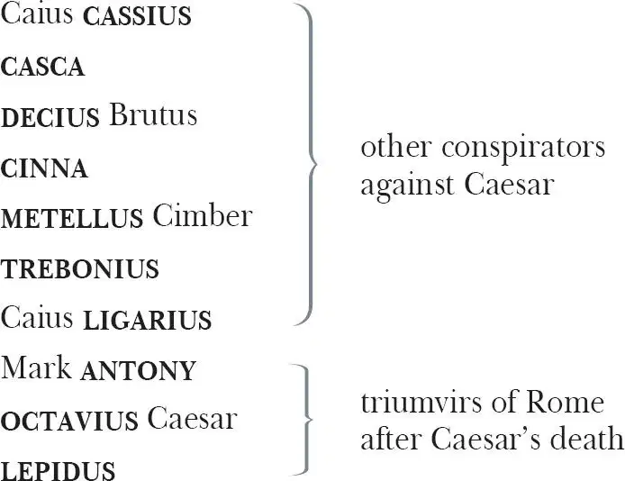
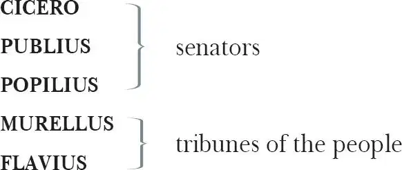
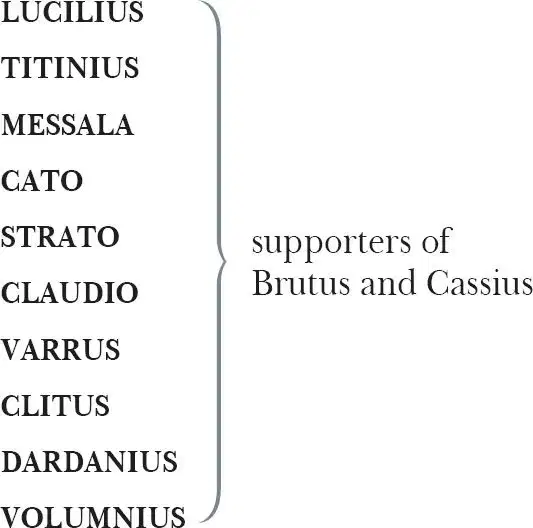

The Tragedy of Julius Caesar
Julius CAESAR
CALPURNIA , his wife
Marcus BRUTUS , sometime friend of Caesar, then conspirator against him
PORTIA , his wife

A SOOTHSAYER
ARTEMIDORUS , a teacher of rhetoric
CINNA , a poet
Another POET

A CARPENTER
AR COBBLE
FIRST, SECOND, THIRD, FOURTH and FIFTH PLEBEIANS
LUCIUS , Brutus' young servant
PINDARUS , Cassius' bondman

SERVANT , to Caesar
SERVANT , to Antony
SERVANT , to Octavius
A MESSENGER
FIRST, SECOND and THIRD SOLDIERS , members of Brutus and Cassius' army
FIRST and SECOND SOLDIERS , members of Antony's army
GHOST , Caesar's ghost
Other Commoners, Senators and Soldiers
Act 1
Scene 1 1 / running scene 1
Enter Flavius, Murellus and certain Commoners over the stage
FLAVIUS Hence! 2 Home, you idle creatures, get you home:
Is this a holiday? What, know you not,
Being mechanical 3 , you ought not walk 4
Upon a labouring day, without the sign 5
Of your profession?— Speak, what trade art thou?
CARPENTER Why, sir, a carpenter.
MURELLUS Where is thy leather apron, and thy rule 6 ?
What dost thou with thy best apparel on?—
You, sir, what trade are you?
COBBLER Truly, sir, in respect of 7 a fine workman 8 , I am but 9 as you would say, a cobbler 10 .
MURELLUS But what trade art thou? Answer me directly 11 .
COBBLER A trade, sir, that I hope, I may use with a safe conscience, which is indeed, sir, a mender of bad soles 12 .
FLAVIUS What trade, thou knave? Thou naughty 13 knave, what trade?
COBBLER Nay I beseech you, sir, be not out 14 with me: yet if you be out, sir, I can mend you 15 .
MURELLUS What mean'st thou by that? Mend me, thou saucy fellow?
COBBLER Why sir, cobble 16 you.
FLAVIUS Thou art a cobbler, art thou?
COBBLER Truly sir, all that I live by is with the awl 17 . I meddle 18 with no tradesman's matters 19 , nor women's matters 20 ; but withal 21 I am indeed, sir, a surgeon to old shoes 22 : when they are in great danger, I recover 23 them. As proper 24 men as ever trod upon 25
neat's leather 26 have gone upon 27 my handiwork 28 .
FLAVIUS But wherefore 29 art not in thy shop today?
Why dost thou lead these men about the streets?
COBBLER Truly, sir, to wear out their shoes, to get myself into more work. But indeed, sir, we make holiday to see Caesar and to rejoice in his triumph 30 .
MURELLUS Wherefore rejoice? What conquest brings he home?
What tributaries 31 follow him to Rome
To grace 32 in captive bonds his chariot wheels?
You blocks, you stones, you worse than senseless things:
O you hard hearts, you cruel men of Rome,
Knew you not Pompey 33 ? Many a time and oft
Have you climbed up to walls and battlements,
To towers and windows? Yea, to chimney-tops,
Your infants in your arms, and there have sat
The livelong 34 day, with patient expectation,
To see great Pompey pass the streets of Rome:
And when you saw his chariot but appear,
Have you not made an universal shout,
That 35 Tiber 36 trembled underneath her banks
To hear the replication 37 of your sounds
Made in her concave 38 shores?
And do you now put on your best attire?
And do you now cull out 39 a holiday?
And do you now strew flowers in his way
That comes in triumph over Pompey's blood 40 ?
Be gone!
Run to your houses, fall upon your knees,
Pray to the gods to intermit 41 the plague
That needs must light on this ingratitude.
FLAVIUS Go, go, good countrymen, and for this fault
Assemble all the poor men of your sort;
Draw them to Tiber banks, and weep your tears
Into the channel till the lowest stream
Do kiss the most exalted shores of all 42 .—
Exeunt all the Commoners
See where their basest mettle 43 be not moved 44 :
They vanish tongue-tied in their guiltiness.
Go you down that way towards the Capitol 45 ,
This way will I: disrobe the images 46
If you do find them decked with ceremonies 47 .
MURELLUS May we do so?
You know it is the feast of Lupercal 48 .
FLAVIUS It is no matter. Let no images
Be hung with Caesar's trophies 49 . I'll about 50
And drive away the vulgar 51 from the streets;
So do you too, where you perceive them thick 52 .
These growing feathers plucked from Caesar's wing
Will make him fly an ordinary pitch 53 ,
Who else 54 would soar above the view of men,
And keep us all in servile fearfulness.
Exeunt
Scene 2 / running scene 1 continues
Enter Caesar, Antony for 55 the course 56 , Calpurnia, Portia, Decius, Cicero, Brutus, Cassius, Casca, a Soothsayer 57 , after them Murellus and Flavius
CAESAR Calpurnia.
CASCA Peace, ho 58 ! Caesar speaks.
CAESAR Calpurnia.
CALPURNIA Here, my lord.
CAESAR Stand you directly in Antonio's way
When he doth run his course 59 . Antonio!
ANTONY Caesar, my lord.
CAESAR Forget not in your speed, Antonio,
To touch Calpurnia, for our elders say,
The barren touchèd in this holy chase
Shake off their sterile curse.
ANTONY I shall remember.
When Caesar says 'Do this' it is performed.
CAESAR Set on, and leave no ceremony out.
Music
SOOTHSAYER Caesar!
CAESAR Ha? Who calls?
CASCA Bid every noise be still: peace yet again!
Music stops
CAESAR Who is it in the press 60 that calls on me?
I hear a tongue shriller than all the music,
Cry 'Caesar!' Speak, Caesar is turned to hear.
SOOTHSAYER Beware the Ides of March 61 .
CAESAR What man is that?
BRUTUS A soothsayer bids you beware the Ides of March.
CAESAR Set him before me: let me see his face.
CASSIUS Fellow, come from the throng: look upon Caesar.
Soothsayer comes forward
CAESAR What say'st thou to me now? Speak once again.
SOOTHSAYER Beware the Ides of March.
CAESAR He is a dreamer. Let us leave him: pass.
Sennet 62 . Exeunt. Brutus and Cassius remain
CASSIUS Will you go see the order 63 of the course?
BRUTUS Not I.
CASSIUS I pray you do.
BRUTUS I am not gamesome 64 : I do lack some part
Of that quick 65 spirit that is in Antony.
Let me not hinder, Cassius, your desires;
I'll leave you.
CASSIUS Brutus, I do observe you now of late 66 :
I have not from your eyes that gentleness
And show of love as I was wont 67 to have:
You bear too stubborn and too strange a hand
Over 68 your friend, that loves you.
BRUTUS Cassius,
Be not deceived: if I have veiled my look,
I turn the trouble of my countenance
Merely 69 upon myself 70 . Vexed I am
Of late with passions of some difference 71 ,
Conceptions 72 only proper 73 to myself
Which give some soil 74 , perhaps, to my behaviours.
But let not therefore my good friends be grieved —
Among which number, Cassius, be you one —
Nor construe 75 any further my neglect
Than that poor Brutus, with himself at war,
Forgets the shows 76 of love to other men.
CASSIUS Then, Brutus, I have much mistook your passion,
By means whereof 77 this breast of mine hath buried 78
Thoughts of great value, worthy cogitations 79 .
Tell me, good Brutus, can you see your face?
BRUTUS No, Cassius, for the eye sees not itself
But 80 by reflection, by some other things.
CASSIUS 'Tis just 81 ,
And it is very much lamented, Brutus,
That you have no such mirrors as will turn 82
Your hidden worthiness into your eye,
That you might see your shadow 83 : I have heard,
Where many of the best respect 84 in Rome —
Except immortal Caesar — speaking of Brutus,
And groaning underneath this age's yoke 85 ,
Have wished that noble Brutus had his eyes 86 .
BRUTUS Into what dangers would you lead me, Cassius,
That you would have me seek into myself
For that which is not in me?
CASSIUS Therefore 87 , good Brutus, be prepared to hear:
And since you know you cannot see yourself
So well as by reflection, I your glass 88
Will modestly 89 discover 90 to yourself
That of 91 yourself which you yet know not of.
And be not jealous on 92 me, gentle 93 Brutus:
Were I a common laughter 94 , or did use 95
To stale 96 with ordinary 97 oaths my love
To every new protester 98 , if you know
That I do fawn on men, and hug them hard,
And after scandal 99 them, or if you know
That I profess 100 myself in banqueting
To all the rout 101 , then hold me dangerous.
Flourish 102 , and shout
BRUTUS What means this shouting? I do fear the people
Choose Caesar for their king.
CASSIUS Ay, do you fear it?
Then must I think you would not have it so.
BRUTUS I would not, Cassius, yet I love him well.
But wherefore do you hold me here so long?
What is it that you would impart to me?
If it be aught 103 toward the general good,
Set honour in one eye, and death i'th'other 104 ,
And I will look on both indifferently 105 .
For let the gods so speed 106 me, as I love
The name of honour more than I fear death.
CASSIUS I know that virtue to be in you, Brutus,
As well as I do know your outward favour 107 .
Well, honour is the subject of my story:
I cannot tell what you and other men
Think of this life, but for my single self,
I had as lief 108 not be 109 as live to be
In awe of such a thing as I myself 110 .
I was born free as Caesar, so were you:
We both have fed as well, and we can both
Endure the winter's cold as well as he,
For once, upon a raw and gusty day,
The troubled Tiber chafing with 111 her shores,
Caesar said to me, 'Dar'st thou, Cassius, now
Leap in with me into this angry flood 112
And swim to yonder point?' Upon the word,
Accoutrèd 113 as I was, I plungèd in
And bade 114 him follow: so indeed he did.
The torrent roared, and we did buffet it 115
With lusty sinews 116 , throwing it aside,
And stemming 117 it with hearts of controversy 118 .
But ere 119 we could arrive the point proposed,
Caesar cried, 'Help me, Cassius, or I sink!'
I — as Aeneas 120 , our great ancestor,
Did from the flames of Troy upon his shoulder
The old Anchises bear — so from the waves of Tiber
Did I the tired Caesar: and this man
Is now become a god, and Cassius is
A wretched creature, and must bend his body 121
If Caesar carelessly but nod on him.
He had a fever when he was in Spain,
And when the fit was on him I did mark 122
How he did shake: 'tis true, this god did shake,
His coward lips did from their colour fly 123 ,
And that same eye, whose bend 124 doth awe the world,
Did lose his lustre: I did hear him groan:
Ay, and that tongue of his that bade 125 the Romans
Mark him, and write his speeches in their books,
'Alas', it cried, 'Give me some drink, Titinius',
As a sick girl. Ye gods, it doth amaze me
A man of such a feeble temper should
So get the start of 126 the majestic world
And bear the palm 127 alone.
Shout. Flourish
BRUTUS Another general shout?
I do believe that these applauses are
For some new honours that are heaped on Caesar.
CASSIUS Why, man, he doth bestride the narrow world
Like a Colossus 128 , and we petty men
Walk under his huge legs and peep about
To find ourselves dishonourable graves.
Men at some time 129 are masters of their fates.
The fault, dear Brutus, is not in our stars 130
But in ourselves, that we are underlings.
Brutus and Caesar: what should be in that 'Caesar'?
Why should that name be sounded 131 more than yours?
Write them together, yours is as fair a name:
Sound them, it doth become the mouth as well:
Weigh them, it is as heavy: conjure 132 with 'em,
Brutus will start 133 a spirit as soon as Caesar.
Now in the names of all the gods at once,
Upon what meat 134 doth this our Caesar feed
That he is grown so great 135 ? — Age 136 , thou art shamed! —
Rome, thou hast lost the breed of 137 noble bloods! —
When went there by an age, since the great flood 138 ,
But it was famed with more than with one man?
When could they say, till now, that talked of Rome,
That her wide walks encompassed but one man?
Now is it Rome indeed, and room 139 enough
When there is in it but one only man.
O, you and I have heard our fathers say
There was a Brutus once 140 that would have brooked 141
Th'eternal devil to keep his state 142 in Rome
As easily as a king.
BRUTUS That you do love me, I am nothing jealous 143 :
What you would work 144 me to, I have some aim 145 :
How I have thought of this and of these times
I shall recount hereafter. For this present,
I would not — so with love I might entreat you 146 —
Be any further moved 147 . What you have said
I will consider, what you have to say
I will with patience hear, and find a time
Both meet 148 to hear and answer such high 149 things.
Till then, my noble friend, chew upon this:
Brutus had rather be a villager
Than to repute 150 himself a son of Rome
Under these hard conditions as this time
Is like 151 to lay upon us.
CASSIUS I am glad that my weak words
Have struck but thus much show of fire from Brutus.
Enter Caesar and his train 152
BRUTUS The games are done, and Caesar is returning.
CASSIUS As they pass by, pluck Casca by the sleeve,
And he will, after 153 his sour fashion, tell you
What hath proceeded worthy 154 note today.
BRUTUS I will do so: but look you, Cassius,
The angry spot doth glow on Caesar's brow,
And all the rest look like a chidden 155 train:
Calpurnia's cheek is pale, and Cicero
Looks with such ferret 156 and such fiery eyes
As we have seen him in the Capitol
Being crossed 157 in conference 158 by some senators.
CASSIUS Casca will tell us what the matter is.
CAESAR Antonio.
ANTONY Caesar?
CAESAR Let me have men about me that are fat,
Sleek-headed 159 men, and such as sleep a-nights.
Yond 160 Cassius has a lean and hungry look:
He thinks too much: such men are dangerous.
ANTONY Fear him not, Caesar, he's not dangerous.
He is a noble Roman, and well given 161 .
CAESAR Would 162 he were fatter! But I fear him not:
Yet if my name 163 were liable to fear,
I do not know the man I should avoid
So soon as that spare 164 Cassius. He reads much,
He is a great observer, and he looks
Quite through the deeds 165 of men. He loves no plays,
As thou dost, Antony: he hears no music:
Seldom he smiles, and smiles in such a sort 166
As if he mocked himself, and scorned his spirit
That could be moved to smile at anything.
Such men as he be never at heart's ease
Whiles they behold a greater 167 than themselves,
And therefore are they very dangerous.
I rather tell thee what is to be feared
Than what I fear, for always I am Caesar 168 .
Come on my right hand, for this ear is deaf,
And tell me truly what thou think'st of him.
Sennet. Exeunt Caesar and his train
CASCA You pulled me by the cloak: would you speak with me?
BRUTUS Ay, Casca, tell us what hath chanced 169 today
That Caesar looks so sad 170 .
CASCA Why, you were with him, were you not?
BRUTUS I should not then ask Casca what had chanced.
CASCA Why, there was a crown 171 offered him; and being offered him, he put it by 172 with the back of his hand, thus, and then the people fell a-shouting.
BRUTUS What was the second noise for?
CASCA Why, for that too.
CASSIUS They shouted thrice: what was the last cry for?
CASCA Why, for that too.
BRUTUS Was the crown offered him thrice?
CASCA Ay, marry 173 , was't, and he put it by thrice, every time gentler 174 than other; and at every putting-by, mine honest neighbours shouted.
CASSIUS Who offered him the crown?
CASCA Why, Antony.
BRUTUS Tell us the manner of it, gentle Casca.
CASCA I can as well be hanged as tell the manner of it: it was mere 175 foolery, I did not mark it. I saw Mark Antony offer him a crown — yet 'twas not a crown neither, 'twas one of these coronets 176 — and as I told you, he put it by once: but for all that, to my thinking, he would fain 177 have had it. Then he offered it to him again, then he put it by again: but to my thinking, he was very loath to lay his fingers off it. And then he offered it the third time; he put it the third time by, and still as 178 he refused it, the rabblement 179 hooted, and clapped their chopped 180 hands, and threw up their sweaty nightcaps 181 , and uttered such a deal of stinking breath because Caesar refused the crown that it had almost choked Caesar, for he swooned and fell down at it. And for mine own part, I durst 182 not laugh, for fear of opening my lips and receiving the bad air.
CASSIUS But soft 183 , I pray you: what, did Caesar swoon?
CASCA He fell down in the market-place, and foamed at mouth, and was speechless.
BRUTUS 'Tis very like 184 — he hath the falling sickness 185 .
CASSIUS No, Caesar hath it not: but you, and I,
And honest Casca, we 186 have the falling sickness.
CASCA I know not what you mean by that, but I am sure Caesar fell down. If the tag-rag 187 people did not clap him and hiss him according as he pleased and displeased them, as they use 188 to do the players in the theatre, I am no true 189 man.
BRUTUS What said he when he came unto himself?
CASCA Marry, before he fell down, when he perceived the common herd was glad he refused the crown, he plucked me 190 ope 191 his doublet 192 and offered them his throat to cut: an 193 I had been a man of any occupation 194 , if I would not have taken him at a word 195 , I would 196 I might go to hell among the rogues. And so he fell. When he came to himself again, he said if he had done or said anything amiss, he desired their worships to think it was his infirmity. Three or four wenches where I stood cried 'Alas, good soul!' and forgave him with all their hearts: but there's no heed to be taken of them; if Caesar had stabbed 197 their mothers, they would have done no less.
BRUTUS And after that he came thus sad away.
CASCA Ay.
CASSIUS Did Cicero say anything?
CASCA Ay, he spoke Greek.
CASSIUS To what effect?
CASCA Nay, and I tell you that, I'll ne'er look you i'th'face again. But those that understood him smiled at one another, and shook their heads: but, for mine own part, it was Greek to me 198 . I could tell you more news too: Murellus and Flavius, for pulling scarves off Caesar's images, are put to silence 199 . Fare you well. There was more foolery yet, if I could remember it.
CASSIUS Will you sup with me tonight, Casca?
CASCA No, I am promised forth 200 .
CASSIUS Will you dine with me tomorrow?
CASCA Ay, if I be alive, and your mind hold 201 , and your dinner worth the eating.
CASSIUS Good, I will expect you.
CASCA Do so. Farewell, both.
Exit
BRUTUS What a blunt 202 fellow is this grown to be!
He was quick mettle 203 when he went to school.
CASSIUS So is he now, in execution
Of any bold or noble enterprise,
However he puts on this tardy 204 form.
This rudeness 205 is a sauce to his good wit 206 ,
Which gives men stomach 207 to digest his words
With better appetite.
BRUTUS And so it is. For this time I will leave you:
Tomorrow if you please to speak with me,
I will come home to you 208 : or if you will,
Come home to me, and I will wait for you.
CASSIUS I will do so. Till then, think of the world 209 .
Exit Brutus
Well, Brutus, thou art noble 210 : yet I see
Thy honourable mettle 211 may be wrought 212
From that it is disposed 213 : therefore it is meet 214
That noble minds keep ever with their likes 215
For who 216 so firm that cannot be seduced?
Caesar doth bear me hard 217 , but he loves Brutus.
If I were Brutus now, and he were Cassius,
He should not humour me 218 . I will this night
In several hands 219 in at his windows throw,
As if they came from several citizens,
Writings all tending to 220 the great opinion
That Rome holds of his name — wherein obscurely 221
Caesar's ambition shall be glanced 222 at.
And after this let Caesar seat him sure 223 ,
For we will shake him, or worse days endure.
Exit
Scene 3 / running scene 1 continues
Thunder and lightning. Enter Casca and Cicero
CICERO Good even 224 , Casca. Brought 225 you Caesar home?
Why are you breathless, and why stare you so?
CASCA Are not you moved 226 , when all the sway 227 of earth
Shakes like a thing unfirm? O Cicero,
I have seen tempests, when the scolding 228 winds
Have rived 229 the knotty oaks, and I have seen
Th'ambitious ocean swell, and rage, and foam,
To be exalted with 230 the threatening clouds:
But never till tonight, never till now,
Did I go through a tempest dropping fire.
Either there is a civil strife in heaven,
Or else the world, too saucy 231 with the gods,
Incenses them to send destruction.
CICERO Why, saw you anything more wonderful 232 ?
CASCA A common slave — you know him well by sight —
Held up his left hand, which did flame and burn
Like twenty torches joined; and yet his hand,
Not sensible of 233 fire, remained unscorched.
Besides — I ha' not since put up 234 my sword —
Against 235 the Capitol I met a lion,
Who glazed 236 upon me and went surly by
Without annoying 237 me. And there were drawn
Upon 238 a heap 239 a hundred ghastly 240 women,
Transformèd with their fear, who swore they saw
Men, all in fire, walk up and down the streets.
And yesterday the bird of night 241 did sit
Even at noonday upon the market-place
Hooting and shrieking. When these prodigies 242
Do so conjointly meet 243 , let not men say
'These are their reasons, they are natural',
For I believe they are portentous things
Unto the climate 244 that they point upon 245 .
CICERO Indeed, it is a strange-disposèd time:
But men may construe things after their fashion 246
Clean 247 from the purpose of the things themselves.
Comes Caesar to the Capitol tomorrow?
CASCA He doth, for he did bid Antonio
Send word to you he would be there tomorrow.
CICERO Goodnight then, Casca: this disturbèd sky
Is not to walk in.
CASCA Farewell, Cicero.
Exit Cicero
Enter Cassius
CASSIUS Who's there?
CASCA A Roman.
CASSIUS Casca, by your voice.
CASCA Your ear is good. Cassius, what 248 night is this?
CASSIUS A very pleasing night to honest men.
CASCA Whoever knew the heavens menace so?
CASSIUS Those that have known the earth so full of faults.
For my part, I have walked about the streets,
Submitting me unto the perilous night,
And thus unbracèd 249 , Casca, as you see,
Have bared my bosom to the thunder-stone 250 :
And when the cross 251 blue lightning seemed to open
The breast of heaven, I did present myself
Even in the aim and very flash of it.
CASCA But wherefore did you so much tempt the heavens?
It is the part of men to fear and tremble
When the most mighty gods by tokens 252 send
Such dreadful 253 heralds 254 to astonish us.
CASSIUS You are dull, Casca, and those sparks of life
That should be in a Roman you do want 255 ,
Or else you use not 256 . You look pale, and gaze,
And put on fear, and cast yourself in wonder
To see the strange impatience 257 of the heavens:
But if you would consider the true cause
Why all these fires, why all these gliding ghosts,
Why birds and beasts, from quality and kind 258 ,
Why old men, fools, and children calculate 259 ,
Why all these things change from their ordinance 260
Their natures and preformèd 261 faculties
To monstrous 262 quality, why, you shall find
That heaven hath infused them with these spirits
To make them instruments of fear and warning
Unto some monstrous state 263 .
Now could I, Casca, name to thee a man
Most like this dreadful night
That thunders, lightens 264 , opens graves and roars
As doth the lion in the Capitol:
A man no mightier than thyself, or me,
In personal action, yet prodigious 265 grown
And fearful 266 , as these strange eruptions 267 are.
CASCA 'Tis Caesar that you mean, is it not, Cassius?
CASSIUS Let it be who it is, for Romans now
Have thews 268 and limbs like to their ancestors;
But woe the while, our fathers 269 ' minds are dead,
And we are governed with our mothers' spirits:
Our yoke and sufferance 270 show us womanish.
CASCA Indeed, they say the senators tomorrow
Mean to establish Caesar as a king,
And he shall wear his crown by sea and land 271 ,
In every place, save here in Italy.
CASSIUS I know where I will wear this dagger then:
Cassius 272 from bondage will deliver Cassius.—
Therein 273 , ye gods, you make the weak most strong;
Therein, ye gods, you tyrants do defeat.—
Nor stony tower, nor walls of beaten brass,
Nor airless dungeon, nor strong links of iron,
Can be retentive to 274 the strength of spirit:
But life being weary of these worldly bars 275
Never lacks power to dismiss itself.
If I know this, know all the world besides 276 ,
That part of tyranny that I do bear 277
I can shake off at pleasure 278 .
Thunder still
CASCA So can I:
So every bondman 279 in his own hand bears
The power to cancel his captivity.
CASSIUS And why should Caesar be a tyrant then?
Poor man, I know he would not be a wolf,
But that he sees the Romans are but sheep:
He were no lion, were not Romans hinds 280 .
Those that with haste will make a mighty fire 281
Begin it with weak straws 282 . What trash 283 is Rome?
What rubbish 284 , and what offal 285 , when it serves
For the base matter to illuminate
So vile 286 a thing as Caesar?— But, O grief,
Where hast thou led me? I, perhaps, speak this
Before a willing bondman: then I know
My answer must be made 287 . But I am armed,
And dangers are to me indifferent.
CASCA You speak to Casca, and to such a man
That is no fleering 288 tell-tale. Hold, my 289 hand:
Be factious 290 for redress of all these griefs
And I will set this foot of mine 291 as far
As who 292 goes farthest.
They shake hands
CASSIUS There's a bargain made.
Now know you, Casca, I have moved already
Some certain of the noblest-minded Romans
To undergo with me an enterprise
Of honourable dangerous consequence;
And I do know by this 293 , they stay 294 for me
In Pompey's porch 295 , for now this fearful night
There is no stir or walking in the streets;
And the complexion 296 of the element 297
In favour 298 's like the work we have in hand,
Most bloody, fiery and most terrible.
Enter Cinna
CASCA Stand close 299 awhile, for here comes one in haste.
CASSIUS 'Tis Cinna, I do know him by his gait.
He is a friend.— Cinna, where haste you so?
CINNA To find out you. Who's that? Metellus Cimber?
CASSIUS No, it is Casca, one incorporate
To 300 our attempts. Am I not stayed 301 for, Cinna?
CINNA I am glad on't 302 . What a fearful night is this?
There's two or three of us have seen strange sights.
CASSIUS Am I not stayed for? Tell me.
CINNA Yes, you are.
O Cassius, if you could
But win the noble Brutus to our party—
CASSIUS Be you content. Good Cinna, take this paper
Gives paper
And look you lay it in the praetor 303 's chair
Where Brutus may but find it 304 . And throw this
In at his window; set this up 305 with wax
Upon old Brutus' statue. All this done,
Repair 306 to Pompey's porch, where you shall find us.
Is Decius Brutus and Trebonius there?
CINNA All but Metellus Cimber, and he's gone
To seek you at your house. Well, I will hie 307 ,
And so bestow these papers as you bade me.
CASSIUS That done, repair to Pompey's theatre.—
Exit Cinna
Come, Casca, you and I will yet ere day
See Brutus at his house: three parts of him
Is ours already, and the man entire
Upon the next encounter yields him ours.
CASCA O, he sits high in all the people's hearts:
And that which would appear offence in us,
His countenance 308 , like richest alchemy 309 ,
Will change to virtue and to worthiness.
CASSIUS Him, and his worth, and our great need of him
You have right well conceited 310 . Let us go,
For it is after midnight, and ere day
We will awake him and be sure of him.
Exeunt
Act 2
Scene 1 311 / running scene 2
Enter Brutus in his orchard 312
BRUTUS What, Lucius, ho?—
Calls
I cannot by the progress of the stars
Give guess how near to day.— Lucius, I say!—
I would it were my fault to sleep so soundly.—
When 313 , Lucius, when? Awake, I say: what, Lucius!
Enter Lucius
LUCIUS Called you, my lord?
BRUTUS Get me a taper 314 in my study, Lucius,
When it is lighted, come and call me here.
LUCIUS I will, my lord.
Exit
BRUTUS It must be by his 315 death: and for my part,
I know no personal cause to spurn 316 at him
But for the general 317 . He would be crowned:
How that might change his nature, there's the question.
It is the bright day that brings forth the adder,
And that craves 318 wary walking: crown him that 319 ,
And then I grant we put a sting in him,
That at his will he may do danger with.
Th'abuse of greatness is when it disjoins
Remorse 320 from power: and to speak truth of Caesar,
I have not known when his affections 321 swayed 322
More than his reason. But 'tis a common proof 323
That lowliness 324 is young ambition's ladder 325
Whereto the climber upward turns his face.
But when he once attains the upmost round 326 ,
He then unto the ladder turns his back,
Looks in the clouds, scorning the base degrees 327
By which he did ascend: so Caesar may;
Then, lest he may, prevent. And since the quarrel
Will bear no colour 328 for the thing he is 329 ,
Fashion 330 it thus: that what he is, augmented 331 ,
Would run to these and these extremities:
And therefore think him as a serpent's egg
Which hatched, would as his kind 332 grow mischievous 333 ,
And kill him in the shell.
Enter Lucius
LUCIUS The taper burneth in your closet 334 , sir.
Searching the window for a flint, I found
This paper, thus sealed up, and I am sure
It did not lie there when I went to bed.
Gives him the letter
BRUTUS Get you to bed again, it is not day.
Is not tomorrow, boy, the first of March?
LUCIUS I know not, sir.
BRUTUS Look in the calendar, and bring me word.
LUCIUS I will, sir.
Exit
BRUTUS The exhalations 335 whizzing in the air
Give so much light that I may read by them.
Opens the letter and reads
'Brutus thou sleep'st. Awake, and see thyself.
Shall Rome, etc. Speak, strike, redress.' —
'Brutus, thou sleep'st. Awake!'
Such instigations have been often dropped
Where I have took them up.
'Shall Rome, etc.' Thus must I piece it out 336 :
Shall Rome stand under one man's awe? What Rome?
My ancestors did from the streets of Rome
The Tarquin 337 drive when he was called a king.
'Speak, strike, redress.' Am I entreated
To speak and strike? O Rome, I make thee promise,
If the redress will follow, thou receivest
Thy full petition 338 at the hand of Brutus.
Enter Lucius
LUCIUS Sir, March is wasted fifteen days.
Knock within
BRUTUS 'Tis good. Go to the gate: somebody knocks.—
[Exit Lucius ]
Since Cassius first did whet 339 me against Caesar,
I have not slept.
Between the acting of a dreadful thing
And the first motion 340 , all the interim is
Like a phantasma 341 , or a hideous dream:
The genius 342 and the mortal instruments 343
Are then in council 344 , and the state 345 of man,
Like to a little kingdom, suffers then
The nature of an insurrection 346 .
Enter Lucius
LUCIUS Sir, 'tis your brother 347 Cassius at the door,
Who doth desire to see you.
BRUTUS Is he alone?
LUCIUS No, sir, there are more with him.
BRUTUS Do you know them?
LUCIUS No, sir, their hats are plucked about 348 their ears
And half their faces buried in their cloaks,
That by no means I may discover 349 them
By any mark of favour 350 .
BRUTUS Let 'em enter:—
[Exit Lucius ]
They are the faction. O conspiracy,
Sham'st thou to show thy dang'rous brow by night,
When evils are most free 351 ? O, then, by day
Where wilt thou find a cavern dark enough
To mask thy monstrous visage 352 ? Seek none, conspiracy,
Hide it in smiles and affability
For if thou path thy native semblance on 353 ,
Not Erebus 354 itself were dim enough
To hide thee from prevention 355 .
Enter the conspirators: Cassius, Casca, Decius, Cinna, Metellus and Trebonius
CASSIUS I think we are too bold 356 upon your rest:
Good morrow, Brutus, do we trouble you?
BRUTUS I have been up this hour, awake all night.
Know I these men that come along with you?
CASSIUS Yes, every man of them; and no man here
But honours you, and every one doth wish
You had but that opinion of yourself
Which every noble Roman bears of you.
This is Trebonius.
BRUTUS He is welcome hither.
CASSIUS This, Decius Brutus.
BRUTUS He is welcome too.
CASSIUS This, Casca; this, Cinna; and this, Metellus Cimber.
BRUTUS They are all welcome.
What watchful cares 357 do interpose themselves
Betwixt your eyes and nigh 358 t?
CASSIUS Shall I entreat a word?
They whisper
DECIUS Here lies the east: doth not the day break here?
CASCA No.
CINNA O, pardon, sir, it doth; and yon 359 grey lines
That fret 360 the clouds are messengers of day.
CASCA You shall confess that you are both deceived 361 :
Here, as 362 I point my sword, the sun arises,
Which is a great way growing on 363 the south,
Weighing 364 the youthful season of the year.
Some two months hence, up higher toward the north
He first presents his fire, and the high east
Stands as the Capitol, directly here.
BRUTUS Give me your hands all over 365 , one by one.
Comes forward with Cassius
CASSIUS And let us swear our resolution.
BRUTUS No, not an oath: if not the face of men 366 ,
The sufferance 367 of our souls, the time's abuse;
If these be motives weak, break off betimes 368 ,
And every man hence to his idle 369 bed.
So let high-sighted 370 tyranny range 371 on
Till each man drop by lottery 372 . But if these —
As I am sure they do — bear fire enough
To kindle cowards, and to steel 373 with valour
The melting spirits of women, then, countrymen,
What need we any spur but our own cause
To prick us to redress? What other bond
Than 374 secret 375 Romans that have spoke the word
And will not palter 376 ? And what other oath
Than honesty to honesty engaged 377 ,
That this shall be, or we will fall 378 for it?
Swear 379 priests and cowards, and men cautelous 380 ,
Old feeble carrions 381 , and such suffering souls
That welcome wrongs: unto bad causes swear
Such creatures as men doubt 382 . But do not stain
The even 383 virtue of our enterprise,
Nor th'insuppressive 384 mettle of our spirits,
To think that or 385 our cause or our performance
Did need an oath, when every drop of blood
That every Roman bears, and nobly bears,
Is guilty of a several 386 bastardy 387
If he do break the smallest particle
Of any promise that hath passed from him.
CASSIUS But what of Cicero? Shall we sound 388 him?
I think he will stand very strong with us.
CASCA Let us not leave him out.
CINNA No, by no means.
METELLUS O, let us have him, for his silver hairs 389
Will purchase us a good opinion,
And buy men's voices to commend our deeds:
It shall be said his judgement ruled our hands.
Our youths and wildness shall no whit appear,
But all be buried in his gravity 390 .
BRUTUS O, name him not: let us not break 391 with him,
For he will never follow anything
That other men begin.
CASSIUS Then leave him out.
CASCA Indeed, he is not fit.
DECIUS Shall no man else be touched 392 , but only Caesar?
CASSIUS Decius, well urged.— I think it is not meet 393
Mark Antony, so well beloved of Caesar,
Should outlive Caesar. We shall find of him
A shrewd contriver 394 . And you know his means 395
If he improve 396 them may well stretch so far
As to annoy 397 us all: which to prevent,
Let Antony and Caesar fall together.
BRUTUS Our course will seem too bloody, Caius Cassius,
To cut the head off and then hack the limbs —
Like wrath in death and envy 398 afterwards —
For Antony is but a limb of Caesar.
Let's be sacrificers, but not butchers, Caius.
We all stand up against the spirit 399 of Caesar,
And in the spirit 400 of men there is no blood.
O, that we then could come by Caesar's spirit
And not dismember Caesar! But, alas,
Caesar must bleed for it. And, gentle friends,
Let's kill him boldly, but not wrathfully:
Let's carve him as a dish fit for the gods,
Not hew him as a carcass fit for hounds.
And let our hearts, as subtle 401 masters do,
Stir up 402 their servants 403 to an act of rage
And after seem to chide 404 'em. This shall make
Our purpose 405 necessary, and not envious,
Which so appearing to the common eyes,
We shall be called purgers 406 , not murderers.
And for Mark Antony, think not of him,
For he can do no more than Caesar's arm
When Caesar's head is off.
CASSIUS Yet I fear him,
For in the ingrafted 407 love he bears to Caesar —
BRUTUS Alas, good Cassius, do not think of him:
If he love Caesar, all that he can do
Is to himself; take thought 408 and die for Caesar.
And that were much he should 409 , for he is given
To sports, to wildness and much company.
TREBONIUS There is no fear 410 in him; let him not die,
For he will live and laugh at this hereafter.
Clock strikes
BRUTUS Peace! Count the clock.
CASSIUS The clock hath stricken three.
TREBONIUS 'Tis time to part.
CASSIUS But it is doubtful yet
Whether Caesar will come forth today or no,
For he is superstitious grown of late,
Quite from the main 411 opinion he held once
Of fantasy, of dreams and ceremonies 412 .
It may be these apparent 413 prodigies,
The unaccustomed terror of this night
And the persuasion of his augurers 414 ,
May hold him from the Capitol today.
DECIUS Never fear that. If he be so resolved,
I can o'ersway him 415 , for he loves to hear
That unicorns may be betrayed with trees 416 ,
And bears with glasses 417 , elephants with holes 418 ,
Lions with toils 419 and men with flatterers.
But when I tell him he hates flatterers,
He says he does, being then most flattered.
Let me work,
For I can give his humour 420 the true bent 421 ,
And I will bring him to the Capitol.
CASSIUS Nay, we will all of us be there to fetch him.
BRUTUS By the eighth hour. Is that the uttermost 422 ?
CINNA Be that the uttermost, and fail not then.
METELLUS Caius Ligarius doth bear Caesar hard 423 ,
Who rated 424 him for speaking well of Pompey.
I wonder none of you have thought of him.
BRUTUS Now, good Metellus, go along by 425 him:
He loves me well, and I have given him reasons 426 .
Send him but hither and I'll fashion him 427 .
CASSIUS The morning comes upon's 428 : we'll leave you, Brutus.—
And, friends, disperse yourselves; but all remember
What you have said, and show yourselves true Romans.
BRUTUS Good gentlemen, look fresh and merrily.
Let not our looks put on 429 our purposes,
But bear it as our Roman actors do,
With untired 430 spirits and formal constancy 431 .
And so good morrow to you every one.—
Exeunt. Brutus remains
Boy! Lucius! Fast asleep? It is no matter.
Calls
Enjoy the honey-heavy dew of slumber:
Thou hast no figures, nor no fantasies 432
Which busy 433 care draws in the brains of men;
Therefore thou sleep'st so sound.
Enter Portia
PORTIA Brutus, my lord.
BRUTUS Portia, what mean you 434 ? Wherefore rise you now?
It is not for your health thus to commit
Your weak condition to the raw cold morning.
PORTIA Nor for yours neither. You've ungently 435 , Brutus,
Stole from my bed: and yesternight, at supper,
You suddenly arose, and walked about,
Musing, and sighing, with your arms a-cross 436 :
And when I asked you what the matter was,
You stared upon me with ungentle looks.
I urged you further, then you scratched your head,
And too impatiently stamped with your foot:
Yet I insisted, yet you answered not,
But with an angry wafture 437 of your hand
Gave sign for me to leave you: so I did,
Fearing to strengthen that impatience
Which seemed too much enkindled, and withal 438
Hoping it was but an effect of humour 439 ,
Which sometime hath his hour with every man.
It will not let you eat, nor talk, nor sleep;
And could it work so much upon your shape 440
As it hath much prevailed on your condition 441 ,
I should not know 442 you, Brutus. Dear my lord,
Make me acquainted with your cause of grief.
BRUTUS I am not well in health, and that is all.
PORTIA Brutus is wise, and were he not in health,
He would embrace the means to come by it.
BRUTUS Why, so I do. Good Portia, go to bed.
PORTIA Is Brutus sick? And is it physical
To walk unbracèd 443 , and suck up the humours 444
Of the dank morning? What, is Brutus sick?
And will he steal out of his wholesome 445 bed
To dare 446 the vile contagion of the night?
And tempt the rheumy 447 and unpurgèd 448 air
To add unto his sickness? No, my Brutus,
You have some sick offence 449 within your mind
Which by the right and virtue of my place 450
I ought to know of: and upon my knees
Kneels
I charm 451 you, by my once-commended beauty,
By all your vows of love and that great vow 452
Which did incorporate and make us one,
That you unfold 453 to me, your self, your half 454 ,
Why you are heavy 455 , and what men tonight
Have had to resort to 456 you, for here have been
Some six or seven who did hide their faces
Even from darkness.
BRUTUS Kneel not, gentle Portia.
Raises her?
PORTIA I should not need, if you were gentle Brutus.
Rises
Within the bond of marriage, tell me, Brutus,
Is it excepted 457 I should know no secrets
That appertain to you? Am I your self
But as it were in sort or limitation 458 ?
To keep 459 with you at meals, comfort 460 your bed
And talk to you sometimes? Dwell I but in the suburbs 461
Of your good pleasure? If it be no more,
Portia is Brutus' harlot 462 , not his wife.
BRUTUS You are my true and honourable wife,
As dear to me as are the ruddy drops 463
That visit my sad heart.
PORTIA If this were true, then should I know this secret.
I grant I am a woman; but withal
A woman that Lord Brutus took to wife:
I grant I am a woman; but withal
A woman well-reputed, Cato 464 's daughter.
Think you I am no stronger than my sex
Being so fathered and so husbanded?
Tell me your counsels 465 , I will not disclose 'em.
I have made strong proof of my constancy 466 ,
Giving myself a voluntary wound
Here in the thigh: can I bear that with patience
And not my husband's secrets?
BRUTUS O ye gods!
Render me worthy of this noble wife!
Knock
Hark, hark one knocks. Portia, go in awhile,
And by and by 467 thy bosom 468 shall partake
The secrets of my heart.
All my engagements I will construe 469 to thee,
All the charactery 470 of my sad brows:
Leave me with haste.—
Exit Portia
Lucius, who's that knocks?
Calls
Enter Lucius and Ligarius
Ligarius wears a kerchief 471
LUCIUS Here is a sick man that would speak with you.
BRUTUS Caius Ligarius, that Metellus spake of.—
Boy, stand aside.— Caius Ligarius, how?
LIGARIUS Vouchsafe 472 good morrow from a feeble tongue.
BRUTUS O, what a time have you chose out, brave Caius,
To wear a kerchief? Would you were not sick!
LIGARIUS I am not sick if Brutus have in hand
Any exploit worthy the name of honour.
BRUTUS Such an exploit have I in hand, Ligarius,
Had you a healthful ear to hear of it.
LIGARIUS By all the gods that Romans bow before,
I here discard my sickness. Soul of Rome,
Takes off the kerchief
Brave son, derived from honourable loins,
Thou like an exorcist 473 hast conjured up
My mortified 474 spirit. Now bid me run
And I will strive 475 with things impossible,
Yea, get the better of them. What's to do?
BRUTUS A piece of work that will make sick men whole 476 .
LIGARIUS But are not some whole that we must make sick?
BRUTUS That must we also. What it is, my Caius,
I shall unfold to thee as we are going
To whom 477 it must be done.
LIGARIUS Set on your foot 478 ,
And with a heart new-fired I follow you,
To do I know not what: but it sufficeth
That Brutus leads me on.
Thunder
BRUTUS Follow me, then.
Exeunt
Scene 2 479 / running scene 3
Thunder and lightning. Enter Julius Caesar in his nightgown
CAESAR Nor heaven nor earth have been at peace tonight:
Thrice hath Calpurnia in her sleep cried out,
'Help, ho! They murder Caesar!' Who's within?
Enter a Servant
SERVANT My lord?
CAESAR Go bid the priests do present 480 sacrifice
And bring me their opinions 481 of success.
SERVANT I will, my lord.
Exit
Enter Calpurnia
CALPURNIA What mean you, Caesar? Think you to walk forth?
You shall not stir out of your house today.
CAESAR Caesar shall forth. The things that threatened me
Ne'er looked but on my back: when they shall see
The face of Caesar, they are vanishèd.
CALPURNIA Caesar, I never stood on 482 ceremonies 483 ,
Yet now they fright me. There is one within,
Besides the things that we have heard and seen,
Recounts most horrid sights seen by the watch 484 .
A lioness hath whelpèd 485 in the streets,
And graves have yawned 486 , and yielded up their dead;
Fierce fiery warriors 487 fight upon the clouds
In ranks and squadrons, and right form of war,
Which drizzled blood upon the Capitol:
The noise of battle hurtled 488 in the air,
Horses do neigh, and dying men did groan,
And ghosts did shriek and squeal 489 about the streets.
O Caesar, these things are beyond all use 490 ,
And I do fear them.
CAESAR What can be avoided
Whose end 491 is purposed 492 by the mighty gods?
Yet Caesar shall go forth, for these predictions
Are to 493 the world in general as to Caesar.
CALPURNIA When beggars die there are no comets seen:
The heavens themselves blaze forth 494 the death of princes.
CAESAR Cowards die many times before their deaths,
The valiant never taste of death but once.
Of all the wonders that I yet have heard,
It seems to me most strange that men should fear,
Seeing that death, a necessary end,
Will come when it will come.
Enter a Servant
What say the augurers?
SERVANT They would not have you to stir forth today.
Plucking the entrails of an offering forth 495 ,
They could not find a heart within the beast.
CAESAR The gods do this in shame of 496 cowardice:
Caesar should be a beast without a heart
If he should stay at home today for fear.
No, Caesar shall not. Danger knows full well
That Caesar is more dangerous than he.
We are two lions littered 497 in one day,
And I the elder and more terrible,
And Caesar shall go forth.
CALPURNIA Alas, my lord,
Your wisdom is consumed in 498 confidence.
Do not go forth today: call it my fear
That keeps you in the house, and not your own.
We'll send Mark Antony to the senate house,
And he shall say you are not well today.
Let me upon my knee prevail in this.
Kneels
CAESAR Mark Antony shall say I am not well,
And for thy humour 499 I will stay at home.
Raises her?
Enter Decius
Here's Decius Brutus, he shall tell them so.
DECIUS Caesar, all hail. Good morrow, worthy Caesar,
I come to fetch you to the senate house.
CAESAR And you are come in very happy 500 time
To bear my greeting to the senators,
And tell them that I will not come today:
Cannot is false, and that I dare not, falser:
I will not come today. Tell them so, Decius.
CALPURNIA Say he is sick.
CAESAR Shall Caesar send a lie?
Have I in conquest stretched mine arm so far
To be afeared to tell greybeards 501 the truth?
Decius, go tell them Caesar will not come.
DECIUS Most mighty Caesar, let me know some cause,
Lest I be laughed at when I tell them so.
CAESAR The cause is in my will, I will not come,
That is enough to satisfy the senate.
But for your private satisfaction,
Because I love you, I will let you know.
Calpurnia here, my wife, stays 502 me at home:
She dreamt tonight she saw my statue,
Which, like a fountain with an hundred spouts,
Did run pure blood, and many lusty 503 Romans
Came smiling and did bathe their hands in it.
And these does she apply for 504 warnings and portents
And evils imminent, and on her knee
Hath begged that I will stay at home today.
DECIUS This dream is all amiss 505 interpreted.
It was a vision, fair and fortunate:
Your statue spouting blood in many pipes
In which so many smiling Romans bathed,
Signifies that from you great Rome shall suck
Reviving blood, and that great men shall press 506
For tinctures, stains, relics 507 and cognizance 508 .
This by Calpurnia's dream is signified.
CAESAR And this way have you well expounded it.
DECIUS I have, when you have heard what I can say:
And know it now, the senate have concluded
To give this day a crown to mighty Caesar.
If you shall send them word you will not come,
Their minds may change. Besides, it were a mock
Apt to be rendered 509 , for someone to say,
'Break up the senate till another time
When Caesar's wife shall meet with better dreams.'
If Caesar hide himself, shall they not whisper
'Lo, Caesar is afraid'?
Pardon me, Caesar, for my dear, dear love
To our proceeding bids me tell you this,
And reason to my love is liable 510 .
CAESAR How foolish do your fears seem now, Calpurnia?
I am ashamèd I did yield to them.
Give me my robe, for I will go.
Enter Brutus, Ligarius, Metellus, Casca, Trebonius, Cinna and Publius
And look where Publius is come to fetch me.
PUBLIUS Good morrow, Caesar.
CAESAR Welcome, Publius.—
What, Brutus, are you stirred so early too?—
Good morrow, Casca.— Caius Ligarius,
Caesar was ne'er so much your enemy
As that same ague 511 which hath made you lean.—
What is't o'clock?
BRUTUS Caesar, 'tis strucken eight.
CAESAR I thank you for your pains and courtesy.
Enter Antony
See, Antony, that revels long o'nights,
Is notwithstanding up 512 .— Good morrow, Antony.
ANTONY So to most noble Caesar.
CAESAR Bid them prepare within:
To Calpurnia or to a Servant
I am to blame to be thus waited for.—
[Exit Calpurnia or a Servant ]
Now, Cinna, now, Metellus, what, Trebonius,
I have an hour's talk in store for you.
Remember that you call on me today:
Be near me, that I may remember 513 you.
TREBONIUS Caesar, I will:— and so near will I be
Aside
That your best friends shall wish I had been further.
CAESAR Good friends, go in, and taste some wine with me,
And we, like friends, will straightway go together.
BRUTUS That every like is not the same 514 , O Caesar,
Aside
The heart of Brutus earns 515 to think upon.
Exeunt
Scene 3 516 / running scene 4
Enter Artemidorus
Reading a paper
ARTEMIDORUS 'Caesar, beware of Brutus, take heed of Cassius, come not near Casca, have an eye to Cinna, trust not Trebonius, mark well Metellus Cimber, Decius Brutus loves thee not, thou hast wronged Caius Ligarius. There is but one mind in all these men, and it is bent 517 against Caesar. If thou be'st not immortal, look about you: security 518 gives way 519 to conspiracy. The mighty gods defend thee. Thy lover 520 , Artemidorus.'
Here will I stand till Caesar pass along,
And as a suitor 521 will I give him this.
My heart laments that virtue cannot live
Out of 522 the teeth 523 of emulation 524 .
If thou read this, O Caesar, thou mayst live;
If not, the Fates with traitors do contrive 525 .
Exit
Scene 4 526 / running scene 5
Enter Portia and Lucius
PORTIA I prithee, boy, run to the senate house.
Stay not to answer me, but get thee gone.
Why dost thou stay?
LUCIUS To know my errand, madam.
PORTIA I would have had thee there and here again
Ere I can tell thee what thou shouldst do there.—
O constancy 527 , be strong upon my side,
Aside
Set a huge mountain 'tween my heart and tongue:
I have a man's 528 mind, but a woman's might.
How hard it is for women to keep counsel 529 .—
Art thou here yet?
LUCIUS Madam, what should I do?
Run to the Capitol, and nothing else?
And so return to you, and nothing else?
PORTIA Yes, bring me word, boy, if thy lord look well,
For he went sickly forth: and take good note 530
What Caesar doth, what suitors press to him.
Hark, boy, what noise is that?
LUCIUS I hear none, madam.
PORTIA Prithee listen well:
I heard a bustling rumour 531 like a fray 532 ,
And the wind brings it from the Capitol.
LUCIUS Sooth 533 , madam, I hear nothing.
Enter the Soothsayer
PORTIA Come hither, fellow. Which way hast thou been?
SOOTHSAYER At mine own house, good lady.
PORTIA What is't o'clock?
SOOTHSAYER About the ninth hour, lady.
PORTIA Is Caesar yet gone to the Capitol?
SOOTHSAYER Madam, not yet. I go to take my stand
To see him pass on to the Capitol.
PORTIA Thou hast some suit 534 to Caesar, hast thou not?
SOOTHSAYER That I have, lady, if it will please Caesar
To be so good to Caesar as to hear me:
I shall beseech him to befriend 535 himself.
PORTIA Why, know'st thou any harm's intended towards him?
SOOTHSAYER None that I know will be
Much that I fear may chance.
Good morrow to you. Here the street is narrow:
The throng that follows Caesar at the heels,
Of senators, of praetors 536 , common suitors,
Will crowd a feeble man almost to death:
I'll get me to a place more void 537 , and there
Speak to great Caesar as he comes along.
Exit
PORTIA I must go in. Ay me! How weak a thing
The heart of woman is.— O Brutus,
The heavens speed 538 thee in thine enterprise.—
Sure, the boy heard me. Brutus hath a suit
That Caesar will not grant. O, I grow faint.—
Run, Lucius, and commend me 539 to my lord,
Say I am merry. Come to me again,
And bring me word what he doth say to thee.
Exeunt [separately ]
Act 3
Scene 1 540 / running scene 6
Flourish. Enter Caesar, Brutus, Cassius, Casca, Decius, Metellus, Trebonius, Cinna,Antony, Lepidus, Artemidorus, Publius [Popilius Lena] and the Soothsayer
CAESAR The Ides of March are come.
To the Soothsayer
SOOTHSAYER Ay, Caesar, but not gone.
ARTEMIDORUS Hail, Caesar. Read this schedule 541 .
DECIUS Trebonius doth desire you to o'erread 542 —
At your best leisure — this his humble suit.
ARTEMIDORUS O Caesar, read mine first, for mine's a suit
That touches Caesar nearer 543 . Read it, great Caesar.
CAESAR What touches us ourself shall be last served 544 .
ARTEMIDORUS Delay not, Caesar, read it instantly.
CAESAR What, is the fellow mad?
PUBLIUS Sirrah 545 , give place 546 .
To Artemidorus
CASSIUS What, urge you your petitions in the street?
Come to the Capitol.
Caesar and his train move on
POPILIUS I wish your enterprise today may thrive.
To Cassius
CASSIUS What enterprise, Popilius?
POPILIUS Fare you well.
Moves toward Caesar
BRUTUS What said Popilius Lena?
CASSIUS He wished today our enterprise might thrive:
I fear our purpose is discoverèd.
BRUTUS Look how he makes to 547 Caesar: mark him.
CASSIUS Casca, be sudden 548 , for we fear prevention 549 .
Brutus, what shall be done? If this be known,
Cassius or Caesar never shall turn back 550 ,
For I will slay myself.
BRUTUS Cassius, be constant 551 :
Popilius Lena speaks not of our purposes,
For look, he smiles, and Caesar 552 doth not change.
CASSIUS Trebonius knows his time: for look you, Brutus.
He draws Mark Antony out of the way.
[Exeunt Antony and Trebonius ]
DECIUS Where is Metellus Cimber? Let him go
Caesar sits?
And presently prefer 553 his suit to Caesar.
BRUTUS He is addressed 554 : press near and second 555 him.
CINNA Casca, you are the first that rears 556 your hand.
CAESAR Are we all ready? What is now amiss
That Caesar and his senate must redress?
METELLUS Most high, most mighty and most puissant 557 Caesar,
Comes forward
Metellus Cimber throws before thy seat 558
Kneels
An humble heart—
CAESAR I must prevent thee, Cimber.
These couchings 559 and these lowly courtesies 560
Might fire 561 the blood of ordinary men,
And turn pre-ordinance and first decree 562
Into the lane 563 of children. Be not fond 564
To think that Caesar bears such rebel blood 565
That will be thawed from the true quality 566
With that which melteth fools — I mean sweet 567 words,
Low-crookèd 568 curtsies and base spaniel-fawning 569 .
Thy brother by decree is banishèd:
If thou dost bend and pray 570 and fawn for him,
I spurn 571 thee like a cur 572 out of my way.
Know, Caesar doth not wrong, nor without cause 573
Will he be satisfied 574 .
METELLUS Is there no voice more worthy than my own
To sound more sweetly in great Caesar's ear
For the repealing 575 of my banished brother?
BRUTUS I kiss thy hand, but not in flattery, Caesar,
Kneels
Desiring thee that Publius Cimber may
Have an immediate freedom of repeal 576 .
CAESAR What, Brutus?
CASSIUS Pardon, Caesar: Caesar, pardon.
As low as to thy foot doth Cassius fall,
Kneels
To beg enfranchisement 577 for Publius Cimber.
CAESAR I could be well moved if I were as you:
If I could pray to move 578 , prayers would move me.
But I am constant as the northern star 579 ,
Of whose true-fixed and resting 580 quality
There is no fellow 581 in the firmament 582 .
The skies are painted with unnumbered sparks 583 ,
They are all fire and every one doth shine:
But there's but one in all doth hold his place.
So in the world: 'tis furnished well with men,
And men are flesh and blood, and apprehensive 584 ;
Yet in the number I do know but one
That unassailable holds on his rank 585 ,
Unshaked of motion 586 . And that I am he,
Let me a little show it, even in this:
That I was constant Cimber should be banished,
And constant do remain to keep him so.
CINNA O Caesar—
Kneels
CAESAR Hence 587 . Wilt thou lift up Olympus 588 ?
DECIUS Great Caesar—
About to kneel
CAESAR Doth not Brutus bootless 589 kneel?
CASCA Speak hands 590 for me!
They stab Caesar
Casca first, Brutus last
CAESAR Et tu, Bruté? 591 — Then fall, Caesar.
Dies
CINNA Liberty! Freedom! Tyranny is dead!
Run hence, proclaim, cry it about the streets.
CASSIUS Some to the common pulpits 592 and cry out
In the ensuing tumult, exeunt all but the conspirators
and Publius
'Liberty, freedom and enfranchisement!'
BRUTUS People and senators, be not affrighted 593 .
Fly not, stand still: ambition's debt is paid 594 .
CASCA Go to the pulpit, Brutus.
DECIUS And Cassius too.
BRUTUS Where's Publius?
CINNA Here, quite confounded with 595 this mutiny 596 .
METELLUS Stand fast 597 together, lest some friend of Caesar's
Should chance—
BRUTUS Talk not of standing 598 . Publius, good cheer 599 :
There is no harm intended to your person,
Nor to no Roman else: so tell them, Publius.
CASSIUS And leave us, Publius, lest that the people,
Rushing on us, should do your age 600 some mischief 601 .
BRUTUS Do so, and let no man abide 602 this deed
But we the doers.
[Exit Publius ]
Enter Trebonius
CASSIUS Where is Antony?
TREBONIUS Fled to his house amazed 603 .
Men, wives and children stare, cry out and run
As 604 it were doomsday.
BRUTUS Fates, we will know your pleasures 605 .
That we shall die we know: 'tis but the time 606
And drawing days out 607 that men stand upon 608 .
CASCA Why, he that cuts off twenty years of life
Cuts off so many years of fearing death.
BRUTUS Grant that, and then is death a benefit:
So are we Caesar's friends that have abridged
His time of fearing death. Stoop, Romans, stoop,
And let us bathe our hands in Caesar's blood
Up to the elbows and besmear our swords:
Then walk we forth, even to the market-place 609 ,
They smear their hands and weapons with Caesar's blood
And waving our red weapons o'er our heads,
Let's all cry 'Peace, freedom and liberty!'
CASSIUS Stoop, then, and wash. How many ages hence
Shall this our lofty scene be acted over 610 ,
In states unborn and accents 611 yet unknown?
BRUTUS How many times shall Caesar bleed in sport
That now on Pompey's basis 612 lies along 613
No worthier than the dust?
CASSIUS So oft as that shall be,
So often shall the knot 614 of us be called
The men that gave their country liberty.
DECIUS What, shall we forth?
CASSIUS Ay, every man away.
Brutus shall lead, and we will grace 615 his heels
With the most boldest and best hearts of Rome.
Enter a Servant
BRUTUS Soft 616 , who comes here? A friend of Antony's.
SERVANT Thus, Brutus, did my master bid me kneel,
Kneels
Thus did Mark Antony bid me fall down,
And being prostrate thus he bade me say:
Brutus is noble, wise, valiant and honest 617 ;
Caesar was mighty, bold, royal and loving.
Say I love Brutus and I honour him,
Say I feared 618 Caesar, honoured him and loved him.
If Brutus will vouchsafe 619 that Antony
May safely come to him and be resolved 620
How Caesar hath deserved to lie in death,
Mark Antony shall not love Caesar dead
So well as Brutus living, but will follow
The fortunes and affairs of noble Brutus
Thorough 621 the hazards of this untrod state 622
With all true faith 623 . So says my master Antony.
BRUTUS Thy master is a wise and valiant Roman:
I never thought him worse.
Tell him, so please him come unto this place,
He shall be satisfied 624 , and by my honour
Depart untouched 625 .
SERVANT I'll fetch him presently 626 .
Exit Servant
BRUTUS I know that we shall have him well to 627 friend.
CASSIUS I wish 628 we may: but yet have I a mind 629
That fears 630 him much, and my misgiving still
Falls shrewdly 631 to the purpose 632 .
Enter Antony
BRUTUS But here comes Antony.— Welcome, Mark Antony.
ANTONY O mighty Caesar! Dost thou lie so low?
To the body
Are all thy conquests, glories, triumphs, spoils 633 ,
Shrunk to this little measure 634 ? Fare thee well.—
I know not, gentlemen, what you intend,
Who else must be let blood 635 , who else is rank 636 :
If I myself, there is no hour so fit
As Caesar's death's hour, nor no instrument
Of half that worth as those your swords, made rich
With the most noble blood of all this world.
I do beseech ye, if you bear me hard,
Now, whilst your purpled 637 hands do reek 638 and smoke,
Fulfil your pleasure. Live 639 a thousand years,
I shall not find myself so apt 640 to die.
No place will please me so, no mean 641 of death,
As here by Caesar, and by you cut off 642 ,
The choice 643 and master 644 spirits of this age.
BRUTUS O Antony! Beg not your death of us:
Though now we must appear bloody and cruel,
As by our hands and this our present act
You see we do, yet see you but 645 our hands
And this the bleeding business they have done:
Our hearts you see not: they are pitiful 646 ,
And pity to the general wrong of Rome —
As fire drives out fire, so pity pity 647 —
Hath done this deed on Caesar. For your part,
To you our swords have leaden 648 points, Mark Antony:
Our arms in strength of malice 649 , and our hearts
Of brothers' temper 650 , do receive 651 you in
With all kind 652 love, good thoughts and reverence.
CASSIUS Your voice 653 shall be as strong as any man's
In the disposing 654 of new dignities 655 .
BRUTUS Only be patient till we have appeased
The multitude 656 , beside themselves with fear,
And then we will deliver you 657 the cause 658
Why I, that did love Caesar when I struck him,
Have thus proceeded 659 .
ANTONY I doubt not of your wisdom.
Shakes hands with each of them in turn
Let each man render 660 me his bloody hand.—
First, Marcus Brutus, will I shake with you;—
Next, Caius Cassius, do I take your hand;—
Now, Decius Brutus, yours;— now yours, Metellus;—
Yours, Cinna;— and my valiant Casca, yours;—
Though last, not least in love, yours, good Trebonius.—
Gentlemen all: alas, what shall I say?
My credit 661 now stands on such slipp'ry 662 ground
That one of two bad ways you must conceit 663 me,
Either a coward or a flatterer.—
That I did love thee, Caesar, O, 'tis true:
If then thy spirit look upon us now,
Shall it not grieve thee dearer 664 than thy death
To see thy Antony making his peace,
Shaking the bloody fingers of thy foes?
Most noble 665 in the presence of thy corpse,
Had I as many eyes as thou hast wounds,
Weeping as fast as they stream forth thy blood,
It would become 666 me better than to close 667
In terms of friendship with thine enemies.
Pardon me, Julius! Here wast thou bayed 668 , brave hart 669 ,
Here didst thou fall, and here thy hunters stand
Signed in 670 thy spoil 671 and crimsoned in thy Lethe 672 .—
O world, thou wast the forest to this 673 hart,
And this indeed, O world, the heart of thee.—
How like a deer, strucken by many princes,
Dost thou here lie?
CASSIUS Mark Antony—
ANTONY Pardon me, Caius Cassius.
The enemies 674 of Caesar shall say this:
Then, in a friend, it is cold modesty 675 .
CASSIUS I blame you not for praising Caesar so,
But what compact 676 mean you to have with us?
Will you be pricked 677 in number of our friends,
Or shall we on 678 , and not depend on you?
ANTONY Therefore 679 I took your hands, but was indeed
Swayed from the point by looking down on Caesar.
Friends am I with you all, and love you all,
Upon this hope, that you shall give me reasons
Why and wherein Caesar was dangerous.
BRUTUS Or else 680 were this a savage spectacle:
Our reasons are so full of good regard 681
That were you, Antony, the son of Caesar,
You should be satisfied.
ANTONY That's all I seek,
And am moreover suitor, that I may
Produce 682 his body to the market-place,
And in the pulpit, as becomes a friend,
Speak in the order 683 of his funeral.
BRUTUS You shall, Mark Antony.
CASSIUS Brutus, a word with you.
Aside to Brutus
You know not what you do. Do not consent
That Antony speak in his funeral:
Know you how much the people may be moved
By that which he will utter.
BRUTUS By your pardon:
Aside to Cassius
I will myself into the pulpit first,
And show the reason of our Caesar's death.
What Antony shall speak, I will protest 684
He speaks by leave 685 and by permission,
And that we are contented Caesar shall
Have all true rites 686 and lawful ceremonies.
It shall advantage more than do us wrong.
CASSIUS I know not what may fall 687 . I like it not.
Aside to Brutus
BRUTUS Mark Antony, here take you Caesar's body.
You shall not in your funeral speech blame us,
But speak all good you can devise of Caesar,
And say you do't by our permission:
Else shall you not have any hand at all
About 688 his funeral. And you shall speak
In the same pulpit whereto I am going,
After my speech is ended.
ANTONY Be it so:
I do desire no more.
BRUTUS Prepare the body then, and follow us.
Exeunt. Antony remains
ANTONY O, pardon me, thou bleeding piece of earth,
To Caesar's body
That I am meek and gentle with these butchers.
Thou art the ruins of the noblest man
That ever livèd in the tide of times 689 .
Woe to the hand that shed this costly 690 blood.
Over thy wounds now do I prophesy —
Which like dumb mouths do ope their ruby lips
To beg the voice and utterance of my tongue —
A curse shall light upon the limbs of men:
Domestic fury and fierce civil strife
Shall cumber 691 all the parts of Italy:
Blood and destruction shall be so in use 692 ,
And dreadful objects 693 so familiar,
That mothers shall but smile when they behold
Their infants quartered 694 with the hands of war:
All pity choked with custom of 695 fell 696 deeds,
And Caesar's spirit ranging 697 for revenge,
With Ate 698 by his side, come hot from hell,
Shall in these confines 699 , with a monarch's voice
Cry havoc 700 and let slip 701 the dogs of war,
That 702 this foul 703 deed shall smell above the earth
With 704 carrion men 705 , groaning 706 for burial.—
Enter Octavius' Servant
You serve Octavius Caesar, do you not?
SERVANT I do, Mark Antony.
ANTONY Caesar did write for him to come to Rome.
SERVANT He did receive his letters and is coming,
And bid me say to you by word of mouth—
O Caesar!
Sees the body
ANTONY Thy heart is big 707 : get thee apart and weep.
Passion 708 , I see, is catching, for mine eyes,
Seeing those beads of sorrow stand in thine,
Began to water. Is thy master coming?
SERVANT He lies tonight within seven leagues 709 of Rome.
ANTONY Post 710 back with speed and tell him what hath chanced:
Here is a mourning Rome, a dangerous Rome,
No Rome of safety for Octavius yet.
Hie hence 711 , and tell him so. Yet stay awhile.
Thou shalt not back till I have borne this corpse
Into the market-place: there shall I try 712
In my oration how the people take
The cruel issue 713 of these bloody men,
According to the which 714 thou shalt discourse 715
To young Octavius of the state of things.
Lend me your hand.
Exeunt
With the body
Scene 2 716 / running scene 7
Enter Brutus and goes into the pulpit, and Cassius with the Plebeians
PLEBEIANS We will be satisfied: let us be satisfied.
BRUTUS Then follow me, and give me audience 717 , friends.
Cassius, go you into the other street
And part the numbers 718 :
Those that will hear me speak, let 'em stay here;
Those that will follow Cassius, go with him
And public 719 reasons shall be renderèd 720
Of Caesar's death.
FIRST PLEBEIAN I will hear Brutus speak.
SECOND PLEBEIAN I will hear Cassius, and compare their reasons
When severally 721 we hear them renderèd.
[Exit Cassius, with some of the Plebeians ]
THIRD PLEBEIAN The noble Brutus is ascended: silence!
BRUTUS Be patient till the last 722 .
Romans, countrymen, and lovers 723 , hear me for my cause 724 and be silent, that you may hear. Believe me for 725 mine honour and have respect to mine honour, that you may believe. Censure 726 me in your wisdom and awake your senses 727 , that you may the better judge. If there be any in this assembly, any dear friend of Caesar's, to him I say that Brutus' love to Caesar was no less than his. If then that friend demand why Brutus rose against Caesar, this is my answer: not that I loved Caesar less, but that I loved Rome more. Had you rather Caesar were living, and die all slaves, than that Caesar were dead, to live all free men? As Caesar loved me, I weep for him; as he was fortunate, I rejoice at it; as he was valiant, I honour him: but as he was ambitious, I slew him. There is tears, for his love: joy, for his fortune: honour, for his valour: and death, for his ambition. Who is here so base, that would be a bondman? If any, speak, for him have I offended. Who is here so rude 728 , that would not be a Roman? If any, speak, for him have I offended. Who is here so vile 729 , that will not love his country? If any, speak, for him have I offended. I pause for a reply.
ALL None, Brutus, none.
BRUTUS Then none have I offended. I have done no more to Caesar, than you shall do to Brutus. The question of 730 his death is enrolled 731 in the Capitol: his glory not extenuated 732 , wherein he was worthy, nor his offences enforced 733 , for which he suffered death.
Enter Mark Antony with Caesar's body
Here comes his body, mourned by Mark Antony, who, though he had no hand in his death, shall receive the benefit of his dying, a place in the commonwealth 734 , as which of you shall not? With this I depart, that as I slew my best lover for the good of Rome, I have the same dagger for myself, when it shall please my country to need my death.
Comes down from the pulpit
ALL Live Brutus, live, live!
FIRST PLEBEIAN Bring him with triumph 735 home unto his house.
SECOND PLEBEIAN 736 Give him a statue with his ancestors.
THIRD PLEBEIAN Let him be Caesar.
FOURTH PLEBEIAN Caesar's better parts 737
Shall be crowned 738 in Brutus.
FIRST PLEBEIAN We'll bring him to his house with shouts and clamours.
BRUTUS My countrymen—
SECOND PLEBEIAN Peace, silence, Brutus speaks.
FIRST PLEBEIAN Peace, ho.
BRUTUS Good countrymen, let me depart alone,
And, for my sake, stay here with Antony:
Do grace to 739 Caesar's corpse and grace 740 his speech
Tending 741 to Caesar's glories, which Mark Antony —
By our permission — is allowed to make.
I do entreat you, not a man depart
Save I alone, till Antony have spoke.
Exit
FIRST PLEBEIAN Stay, ho, and let us hear Mark Antony.
THIRD PLEBEIAN Let him go up into the public chair 742 .
We'll hear him.— Noble Antony, go up.
ANTONY For Brutus' sake I am beholding 743 to you.
Goes into the pulpit
FOURTH PLEBEIAN What does he say of Brutus?
THIRD PLEBEIAN He says, for Brutus' sake
He finds himself beholding to us all.
FOURTH PLEBEIAN 'Twere best he speak no harm of Brutus here.
FIRST PLEBEIAN This Caesar was a tyrant.
THIRD PLEBEIAN Nay, that's certain:
We are blest that Rome is rid of him.
SECOND PLEBEIAN Peace, let us hear what Antony can say.
ANTONY You gentle Romans.
ALL Peace, ho, let us hear him.
ANTONY Friends, Romans, countrymen, lend me your ears:
I come to bury Caesar, not to praise him.
The evil that men do lives after them:
The good is oft interrèd 744 with their bones.
So let it be with Caesar. The noble Brutus
Hath told you Caesar was ambitious:
If it were so, it was a grievous fault,
And grievously hath Caesar answered 745 it.
Here, under leave 746 of Brutus and the rest —
For Brutus is an honourable man:
So are they all, all honourable men —
Come I to speak in Caesar's funeral.
He was my friend, faithful and just to me;
But Brutus says, he was ambitious,
And Brutus is an honourable man.
He hath brought many captives home to Rome,
Whose ransoms did the general coffers 747 fill:
Did this in Caesar seem ambitious?
When that the poor have cried, Caesar hath wept:
Ambition should be made of sterner stuff.
Yet Brutus says, he was ambitious,
And Brutus is an honourable man.
You all did see, that on the Lupercal,
I thrice presented him a kingly crown,
Which he did thrice refuse. Was this ambition?
Yet Brutus says, he was ambitious,
And sure he is an honourable man.
I speak not to disprove what Brutus spoke,
But here I am, to speak what I do know.
You all did love him once, not without cause:
What cause withholds you then, to mourn for him?—
O judgement! Thou art fled to brutish beasts
And men have lost their reason.— Bear with me:
My heart is in the coffin there with Caesar,
And I must pause till it come back to me.
FIRST PLEBEIAN Methinks there is much reason in his sayings.
SECOND PLEBEIAN If thou consider rightly of the matter,
Caesar has had great wrong.
THIRD PLEBEIAN Has he, masters 748 ?
I fear there will a worse 749 come in his place.
FOURTH PLEBEIAN Marked ye his words? He would not take the crown:
Therefore 'tis certain he was not ambitious.
FIRST PLEBEIAN If it be found so, some will dear abide it 750 .
SECOND PLEBEIAN Poor soul, his eyes are red as fire with weeping.
THIRD PLEBEIAN There's not a nobler man in Rome than Antony.
FOURTH PLEBEIAN Now mark him, he begins again to speak.
ANTONY But 751 yesterday the word of Caesar might
Have stood against 752 the world: now lies he there,
And none so poor 753 to do him reverence.
O masters! If I were disposed to stir
Your hearts and minds to mutiny and rage,
I should do Brutus wrong, and Cassius wrong,
Who — you all know — are honourable men.
I will not do them wrong: I rather choose
To wrong the dead, to wrong myself and you,
Than I will wrong such honourable men.
But here's a parchment, with the seal of Caesar.
Shows the will
I found it in his closet 754 : 'tis his will.
Let but the commons hear this testament —
Which, pardon me, I do not mean to read —
And they would go and kiss dead Caesar's wounds,
And dip their napkins 755 in his sacred blood 756 ,
Yea, beg a hair of him for memory,
And, dying, mention it within their wills,
Bequeathing it as a rich legacy
Unto their issue 757 .
FOURTH PLEBEIAN We'll hear the will. Read it, Mark Antony.
ALL The will, the will! We will hear Caesar's will.
ANTONY Have patience, gentle friends, I must not read it.
It is not meet 758 you know how Caesar loved you.
You are not wood, you are not stones, but men:
And being men, hearing the will of Caesar,
It will inflame you, it will make you mad;
'Tis good you know not that you are his heirs,
For if you should, O, what would come of it!
FOURTH PLEBEIAN Read the will. We'll hear it, Antony.
You shall read us the will, Caesar's will.
ANTONY Will you be patient? Will you stay awhile?
I have o'ershot myself 759 to tell you of it.
I fear I wrong the honourable men
Whose daggers have stabbed Caesar: I do fear it.
FOURTH PLEBEIAN They were traitors: honourable men?
ALL The will, the testament!
SECOND PLEBEIAN They were villains, murderers. The will, read the will.
ANTONY You will compel me then to read the will:
Then make a ring about the corpse of Caesar,
And let me show you him that made the will.
Shall I descend? And will you give me leave?
ALL Come down.
SECOND PLEBEIAN Descend.
THIRD PLEBEIAN You shall have leave.
Antony comes down
FOURTH PLEBEIAN A ring. Stand round.
FIRST PLEBEIAN Stand from 760 the hearse 761 , stand from the body.
SECOND PLEBEIAN Room for Antony, most noble Antony.
ANTONY Nay, press not so upon me. Stand far 762 off.
ALL Stand back: room, bear back.
ANTONY If you have tears, prepare to shed them now.
You all do know this mantle 763 . I remember
The first time ever Caesar put it on.
'Twas on a summer's evening in his tent,
That day he overcame the Nervii 764 .
Look, in this place ran Cassius' dagger through:
See what a rent 765 the envious Casca made:
Through this, the well-belovèd Brutus stabbed,
And as he plucked his cursèd steel away,
Mark how the blood of Caesar followed it,
As 766 rushing out of doors, to be resolved
If Brutus so unkindly 767 knocked or no,
For Brutus, as you know, was Caesar's angel 768 .—
Judge, O you gods, how dearly Caesar loved him.—
This was the most unkindest cut of all.
For when the noble Caesar saw him stab,
Ingratitude, more strong than traitors' arms,
Quite vanquished him: then burst his mighty heart,
And in his mantle muffling up his face,
Even at the base of Pompey's statue —
Which all the while ran blood — great Caesar fell.
O, what a fall was there, my countrymen!
Then I, and you, and all of us fell down,
Whilst bloody treason flourished 769 over us.
O, now you weep, and I perceive you feel
The dint 770 of pity: these are gracious 771 drops.
Kind souls, what weep you when you but behold
Our Caesar's vesture 772 wounded? Look you here,
Uncovers the body
Here is himself, marred 773 as you see with 774 traitors.
FIRST PLEBEIAN O, piteous spectacle!
SECOND PLEBEIAN O noble Caesar!
THIRD PLEBEIAN O, woeful day!
FOURTH PLEBEIAN O, traitors, villains!
FIRST PLEBEIAN O, most bloody sight!
SECOND PLEBEIAN We will be revenged.
ALL Revenge! About! 775 Seek! Burn! Fire! Kill! Slay!
Let not a traitor live!
ANTONY Stay, countrymen.
FIRST PLEBEIAN Peace there, hear the noble Antony.
SECOND PLEBEIAN We'll hear him, we'll follow him, we'll die with him.
ANTONY Good friends, sweet friends, let me not stir you up
To such a sudden flood of mutiny:
They that have done this deed are honourable.
What private griefs 776 they have, alas, I know not,
That made them do it: they are wise and honourable
And will no doubt with reasons answer you.
I come not, friends, to steal away your hearts:
I am no orator 777 , as Brutus is;
But as you know me all a plain blunt 778 man
That love my friend, and that they know full well
That gave me public leave to speak of him,
For I have neither wit 779 , nor words, nor worth,
Action 780 , nor utterance, nor the power of speech,
To stir men's blood. I only speak right on 781 :
I tell you that which you yourselves do know,
Show you sweet Caesar's wounds, poor poor dumb mouths,
And bid them speak for me. But were I Brutus 782 ,
And Brutus Antony, there were an Antony
Would ruffle up 783 your spirits, and put a tongue
In every wound of Caesar that should move
The stones of Rome to rise and mutiny.
ALL We'll mutiny.
FIRST PLEBEIAN We'll burn the house of Brutus.
THIRD PLEBEIAN Away, then, come, seek the conspirators.
ANTONY Yet hear me, countrymen, yet hear me speak.
ALL Peace ho, hear Antony, most noble Antony.
ANTONY Why, friends, you go to do you know not what:
Wherein 784 hath Caesar thus deserved your loves?
Alas, you know not. I must tell you then:
You have forgot the will I told you of.
ALL Most true. The will: let's stay and hear the will.
ANTONY Here is the will, and under Caesar's seal.
To every Roman citizen he gives,
To every several 785 man, seventy-five drachmas 786 .
SECOND PLEBEIAN Most noble Caesar, we'll revenge his death.
THIRD PLEBEIAN O royal Caesar.
ANTONY Hear me with patience.
ALL Peace ho.
ANTONY Moreover, he hath left you all his walks,
His private arbours and new-planted orchards 787 ,
On this side Tiber. He hath left them you
And to your heirs for ever: common pleasures 788
To walk abroad and recreate 789 yourselves.
Here was a Caesar: when comes such another?
FIRST PLEBEIAN Never, never. Come, away, away:
We'll burn his body in the holy place,
And with the brands 790 fire 791 the traitors' houses.
Take up the body.
SECOND PLEBEIAN Go fetch fire.
THIRD PLEBEIAN Pluck down benches.
FOURTH PLEBEIAN Pluck down forms 792 , windows 793 , anything.
Exeunt Plebeians
With the body
ANTONY Now let it work. Mischief 794 , thou art afoot:
Take thou what course thou wilt.—
Enter Servant
How now, fellow?
SERVANT Sir, Octavius is already come to Rome.
ANTONY Where is he?
SERVANT He and Lepidus are at Caesar's house.
ANTONY And thither will I straight 795 , to visit him:
He comes upon a wish 796 . Fortune is merry 797
And in this mood will give us anything.
SERVANT I heard him say Brutus and Cassius
Are rid 798 like madmen through the gates of Rome.
ANTONY Belike 799 they had some notice of 800 the people
How I had moved them. Bring me to Octavius.
Exeunt
Scene 3 801 / running scene 7 continues
Enter Cinna the poet, and after him the Plebeians
CINNA I dreamt tonight 802 that I did feast with Caesar,
And things unluckily charge my fantasy 803 :
I have no will to wander forth 804 of doors,
Yet something leads me forth.
FIRST PLEBEIAN What is your name?
SECOND PLEBEIAN Whither are you going?
THIRD PLEBEIAN Where do you dwell?
FOURTH PLEBEIAN Are you a married man or a bachelor?
SECOND PLEBEIAN Answer every man directly 805 .
FIRST PLEBEIAN Ay, and briefly.
FOURTH PLEBEIAN Ay, and wisely.
THIRD PLEBEIAN Ay, and truly, you were best.
CINNA What is my name? Whither am I going? Where do I dwell? Am I a married man or a bachelor? Then, to answer every man directly and briefly, wisely and truly: wisely I say I am a bachelor.
SECOND PLEBEIAN That's as much as to say they are fools that marry: you'll bear me a bang 806 for that, I fear. Proceed, directly.
CINNA Directly, I am going to Caesar's funeral.
FIRST PLEBEIAN As a friend or an enemy?
CINNA As a friend.
SECOND PLEBEIAN That matter is answered directly.
FOURTH PLEBEIAN For your dwelling, briefly.
CINNA Briefly, I dwell by the Capitol.
THIRD PLEBEIAN Your name, sir, truly.
CINNA Truly, my name is Cinna.
FIRST PLEBEIAN Tear him to pieces, he's a conspirator 807 .
CINNA I am Cinna the Poet, I am Cinna the Poet.
FOURTH PLEBEIAN Tear him for his bad verses, tear him for his bad verses.
CINNA I am not Cinna the conspirator.
FOURTH PLEBEIAN It is no matter, his name's Cinna. Pluck 808 but his name out of his heart and turn him going 809 .
THIRD PLEBEIAN Tear him, tear him! Come, brands, ho! Fire-brands! To Brutus', to Cassius', burn all! Some to Decius' house, and some to Casca's; some to Ligarius'! Away, go!
Exeunt all the Plebeians [dragging Cinna ]
Act 4
Scene 1 810 / running scene 8
Enter Antony, Octavius and Lepidus
ANTONY These many, then, shall die: their names are pricked 811 .
Shows a list
OCTAVIUS Your brother 812 too must die: consent you, Lepidus?
LEPIDUS I do consent.
OCTAVIUS Prick him down, Antony.
LEPIDUS Upon condition Publius shall not live,
Who is your sister's son, Mark Antony.
ANTONY He shall not live; look, with a spot 813 I damn 814 him.
But, Lepidus, go you to Caesar's house:
Fetch the will hither, and we shall determine
How to cut off some charge in legacies 815 .
LEPIDUS What, shall I find you here?
OCTAVIUS Or 816 here, or at the Capitol.
Exit Lepidus
ANTONY This is a slight 817 unmeritable man,
Meet 818 to be sent on errands: is it fit,
The three-fold world divided 819 , he should stand
One of the three to share it?
OCTAVIUS So you thought him,
And took his voice 820 who should be pricked to die
In our black sentence 821 and proscription 822 .
ANTONY Octavius, I have seen more days 823 than you,
And though we lay these honours on this man
To ease ourselves of divers sland'rous loads 824 ,
He shall but bear them as the ass bears gold,
To groan and sweat under the business 825 ,
Either led or driven, as we point the way:
And having brought our treasure where we will 826 ,
Then take we down his load, and turn him off 827 —
Like to the empty 828 ass — to shake his ears
And graze in commons 829 .
OCTAVIUS You may do your will:
But he's a tried 830 and valiant soldier.
ANTONY So is my horse, Octavius, and for that
I do appoint him store of provender 831 .
It is a creature that I teach to fight,
To wind 832 , to stop, to run directly on,
His corporal 833 motion governed by my spirit,
And, in some taste 834 , is Lepidus but so:
He must be taught, and trained, and bid go forth —
A barren-spirited 835 fellow; one that feeds
On objects, arts and imitations 836
Which, out of use and staled 837 by other men,
Begin his fashion 838 . Do not talk of him
But as a property 839 . And now, Octavius,
Listen 840 great things. Brutus and Cassius
Are levying powers 841 . We must straight make head 842 :
Therefore let our alliance be combined 843 ,
Our best friends made 844 , our means stretched 845 ,
And let us presently 846 go sit in counsel 847 ,
How covert matters may be best disclosed 848 ,
And open 849 perils surest 850 answerèd.
OCTAVIUS Let us do so, for we are at the stake 851
And bayed about 852 with many enemies,
And some that smile have in their hearts, I fear,
Millions of mischiefs 853 .
Exeunt
Scene 2 854 / running scene 9
Drum. Enter Brutus, Lucilius and the army. Titinius and Pindarus meet them
BRUTUS Stand ho 855 .
LUCILIUS Give the word, ho 856 , and stand.
BRUTUS What now, Lucilius, is Cassius near?
LUCILIUS He is at hand, and Pindarus is come
To do you salutation from his master 857 .
BRUTUS He greets me well. Your master, Pindarus,
In his own change 858 , or by ill officers 859 ,
Hath given me some worthy 860 cause to wish
Things done, undone: but if he be at hand
I shall be satisfied 861 .
PINDARUS I do not doubt
But that my noble master will appear
Such as he is, full of regard 862 and honour.
BRUTUS He is not doubted.— A word, Lucilius.
Brutus and Lucilius speak apart
How he 863 received you: let me be resolved 864 .
LUCILIUS With courtesy and with respect enough,
But not with such familiar instances 865 ,
Nor with such free and friendly conference 866
As he hath used of old.
BRUTUS Thou hast described
A hot 867 friend, cooling: ever 868 note, Lucilius,
When love begins to sicken and decay
It useth an enforced ceremony 869 .
There are no tricks in plain and simple faith:
But hollow 870 men, like horses hot at hand 871 ,
Make gallant 872 show, and promise of their mettle 873 :
Low march 874 within
But when they should endure the bloody 875 spur,
They fall 876 their crests 877 , and like deceitful jades 878
Sink in the trial 879 . Comes his army on?
LUCILIUS They mean this night in Sardis to be quartered 880 :
The greater part, the horse in general 881 ,
Are come with Cassius.
Enter Cassius and his powers 882
BRUTUS Hark, he is arrived:
March gently 883 on to meet him.
CASSIUS Stand ho.
BRUTUS Stand ho. Speak the word along.
FIRST SOLDIER Stand.
SECOND SOLDIER Stand.
THIRD SOLDIER Stand.
CASSIUS Most noble brother 884 , you have done me wrong.
BRUTUS Judge me, you gods; wrong I mine enemies?
And if not so, how should 885 I wrong a brother?
CASSIUS Brutus, this sober form of yours hides wrongs,
And when you do them—
BRUTUS Cassius, be content.
Speak your griefs 886 softly. I do know you well:
Before the eyes of both our armies here —
Which should perceive nothing but love from us —
Let us not wrangle. Bid them move away:
Then in my tent, Cassius, enlarge 887 your griefs,
And I will give you audience 888 .
CASSIUS Pindarus,
Bid our commanders lead their charges 889 off 890
A little from this ground.
BRUTUS Lucilius, do you the like, and let no man
Come to our tent till we have done our conference.
Let Lucius and Titinius guard our door.
Exeunt. Brutus and Cassius remain
CASSIUS That you have wronged me doth appear in this:
They enter the tent
You have condemned and noted 891 Lucius Pella
For taking bribes here of the Sardians;
Wherein my letters, praying 892 on his side
Because I knew the man, was slighted off 893 .
BRUTUS You wronged yourself to write in such a case.
CASSIUS In such a time as this it is not meet 894
That every nice 895 offence should bear his comment 896 .
BRUTUS Let me tell you, Cassius, you yourself
Are much condemned to have an itching palm 897 ,
To sell and mart 898 your offices 899 for gold
To undeservers.
CASSIUS I, an itching palm?
You know that you are Brutus that speaks this,
Or by the gods, this speech were else your last 900 .
BRUTUS The name of Cassius honours 901 this corruption,
And chastisement 902 doth therefore hide his head 903 .
CASSIUS Chastisement?
BRUTUS Remember March, the Ides of March remember:
Did not great Julius bleed for justice' sake?
What villain touched his body, that did stab
And not for justice? What, shall one of us,
That struck the foremost man of all this world
But 904 for supporting robbers 905 : shall we now
Contaminate our fingers with base bribes?
And sell the mighty space of our large honours 906
For so much trash 907 as may be graspèd thus?
I had rather be a dog and bay 908 the moon,
Than such a Roman.
CASSIUS Brutus, bait not me,
I'll not endure it: you forget yourself
To hedge me in 909 . I am a soldier, I,
Older in practice, abler than yourself
To make conditions 910 .
BRUTUS Go to 911 , you are not Cassius.
CASSIUS I am.
BRUTUS I say you are not.
CASSIUS Urge me no more, I shall forget myself 912 .
Have mind upon 913 your health: tempt me no further.
BRUTUS Away, slight 914 man!
CASSIUS Is't possible?
BRUTUS Hear me, for I will speak.
Must I give way and room 915 to your rash choler 916 ?
Shall I be frighted when a madman stares?
CASSIUS O ye gods, ye gods, must I endure all this?
BRUTUS All this? Ay, more: fret till your proud heart break.
Go show your slaves how choleric you are,
And make your bondmen tremble. Must I budge 917 ?
Must I observe 918 you? Must I stand and crouch 919
Under your testy humour 920 ? By the gods,
You shall digest 921 the venom of your spleen 922
Though it do split you. For, from this day forth,
I'll use you for my mirth, yea, for my laughter,
When you are waspish.
CASSIUS Is it come to this?
BRUTUS You say you are a better soldier:
Let it appear so; make your vaunting 923 true
And it shall please me well. For mine own part,
I shall be glad to learn of 924 noble men.
CASSIUS You wrong me every way: you wrong me, Brutus.
I said, an elder soldier, not a better.
Did I say 'better'?
BRUTUS If you did, I care not.
CASSIUS When Caesar lived, he durst not thus have moved me 925 .
BRUTUS Peace, peace, you durst not so have tempted him.
CASSIUS I durst not?
BRUTUS No.
CASSIUS What? Durst not tempt him?
BRUTUS For your life you durst not.
CASSIUS Do not presume 926 too much upon my love:
I may do that I shall be sorry for.
BRUTUS You have done that you should be sorry for.
There is no terror, Cassius, in your threats,
For I am armed so strong in honesty
That they pass by me as the idle 927 wind,
Which I respect not. I did send to you
For certain sums of gold, which you denied me,
For I can raise no money by vile means 928 :
By heaven, I had rather coin 929 my heart
And drop 930 my blood for drachmas 931 , than to wring
From the hard 932 hands of peasants their vile 933 trash
By any indirection 934 . I did send
To you for gold to pay my legions,
Which you denied me: was that done like Cassius?
Should I have answered Caius Cassius so?
When Marcus Brutus grows so covetous,
To lock such rascal counters 935 from his friends,
Be ready, gods, with all your thunderbolts,
Dash him to pieces!
CASSIUS I denied you not.
BRUTUS You did.
CASSIUS I did not. He was but a fool that brought
My answer back. Brutus hath rived 936 my heart:
A friend should bear his friend's infirmities 937 ;
But Brutus makes mine greater than they are.
BRUTUS I do not, till you practise them on me.
CASSIUS You love me not.
BRUTUS I do not like your faults.
CASSIUS A friendly eye could never see such faults.
BRUTUS A flatterer's would not, though they do appear
As huge as high Olympus.
CASSIUS Come, Antony, and young Octavius, come,
Revenge yourselves alone on Cassius,
For Cassius is aweary of the world:
Hated by one he loves, braved 938 by his brother,
Checked 939 like a bondman, all his faults observed,
Set in a notebook, learned and conned by rote 940
To cast into my teeth. O, I could weep
My spirit from mine eyes! There is my dagger,
And here my naked breast: within, a heart
Dearer 941 than Pluto 942 's mine 943 , richer than gold.
If that thou be'st a Roman, take it forth 944 .
I that denied thee gold will give my heart:
Strike as thou didst at Caesar, for I know,
When thou didst hate him worst, thou lov'dst him better
Than ever thou lov'dst Cassius.
BRUTUS Sheathe your dagger.
Be angry when you will, it shall have scope:
Do what you will, dishonour shall be humour 945 .
O Cassius, you are yokèd with a lamb 946
That carries anger as the flint bears fire,
Who, much enforcèd 947 , shows a hasty 948 spark
And straight is cold again.
CASSIUS Hath Cassius lived
To be but mirth and laughter to his Brutus,
When grief and blood ill-tempered 949 vexeth him?
BRUTUS When I spoke that, I was ill-tempered too.
CASSIUS Do you confess so much? Give me your hand.
BRUTUS And my heart too.
They embrace
CASSIUS O Brutus!
BRUTUS What's the matter?
CASSIUS Have not you love enough to bear with me,
When that rash humour 950 which my mother gave me
Makes me forgetful 951 ?
BRUTUS Yes, Cassius, and from henceforth
When you are over-earnest with your Brutus,
He'll think your mother chides, and leave you so 952 .
Enter a Poet [with Lucilius and Titinius ]
POET Let me go in to see the generals.
There is some grudge between 'em, 'tis not meet
They be alone.
LUCILIUS You shall not come to them.
POET Nothing but death shall stay me.
CASSIUS How now? What's the matter?
POET For shame, you generals; what do you mean 953 ?
Love and be friends, as two such men should be,
For I have seen more years, I'm sure, than ye.
CASSIUS Ha, ha, how vilely doth this cynic 954 rhyme!
BRUTUS Get you hence, sirrah. Saucy 955 fellow, hence.
CASSIUS Bear with him, Brutus, 'tis his fashion 956 .
BRUTUS I'll know his humour when he knows his time 957 :
What should the wars do with these jigging 958 fools?
Companion 959 , hence.
CASSIUS Away, away, be gone.
Exit Poet
BRUTUS Lucilius and Titinius, bid the commanders
Prepare to lodge their companies tonight.
CASSIUS And come yourselves, and bring Messala with you
Immediately to us.
[Exeunt Lucilius and Titinius ]
BRUTUS Lucius, a bowl of 960 wine.
Calls
CASSIUS I did not think you could have been so angry.
BRUTUS O Cassius, I am sick of many griefs.
CASSIUS Of your philosophy 961 you make no use,
If you give place 962 to accidental evils 963 .
BRUTUS No man bears sorrow better. Portia is dead.
CASSIUS Ha? Portia?
BRUTUS She is dead.
CASSIUS How scaped 964 I killing when I crossed 965 you so?
O, insupportable and touching 966 loss!
Upon 967 what sickness?
BRUTUS Impatient of my absence,
And grief that young Octavius with Mark Antony
Have made themselves so strong — for with her 968 death
That tidings 969 came — with this she fell distract 970 ,
And — her attendants absent — swallowed fire 971 .
CASSIUS And died so?
BRUTUS Even so.
CASSIUS O ye immortal gods!
Enter Boy [Lucius ] with wine and tapers
BRUTUS Speak no more of her. Give me a bowl of wine.
In this I bury all unkindness, Cassius.
Drinks
CASSIUS My heart is thirsty for that noble pledge.
Fill, Lucius, till the wine o'erswell 972 the cup:
Drinks
I cannot drink too much of Brutus' love.
[Exit Lucius ]
Enter Titinius and Messala
BRUTUS Come in, Titinius. Welcome, good Messala.
Now sit we close about this taper here
And call in question 973 our necessities.
They sit
CASSIUS Portia, art thou gone?
BRUTUS No more, I pray you.—
Messala, I have here receivèd letters,
Shows letters
That young Octavius and Mark Antony
Come down upon us with a mighty power,
Bending 974 their expedition 975 toward Philippi 976 .
MESSALA Myself have letters of the selfsame tenor 977 .
BRUTUS With what addition?
MESSALA That by proscription and bills of outlawry 978 ,
Octavius, Antony and Lepidus
Have put to death an hundred senators.
BRUTUS Therein our letters do not well agree:
Mine speak of seventy senators that died
By their proscriptions, Cicero being one.
CASSIUS Cicero one?
MESSALA Cicero is dead,
And by that order of proscription.
Had you your letters from your wife, my lord?
BRUTUS No, Messala.
MESSALA Nor nothing in your letters writ of her?
BRUTUS Nothing, Messala.
MESSALA That, methinks, is strange.
BRUTUS Why ask you? Hear you aught of her in yours?
MESSALA No, my lord.
BRUTUS Now, as you are a Roman, tell me true.
MESSALA Then like a Roman bear the truth I tell,
For certain she is dead, and by strange manner.
BRUTUS Why, farewell, Portia: we must die, Messala:
With meditating that she must die once 979 ,
I have the patience to endure it now.
MESSALA Even so 980 great men great losses should endure.
CASSIUS I have as much of this in art 981 as you,
But yet my nature 982 could not bear it 983 so.
BRUTUS Well, to our work alive 984 . What do you think
Of marching to Philippi presently?
CASSIUS I do not think it good.
BRUTUS Your reason?
CASSIUS This it is:
'Tis better that the enemy seek us,
So shall he waste his means, weary his soldiers,
Doing himself offence 985 , whilst we, lying still,
Are full of rest, defence and nimbleness.
BRUTUS Good reasons must of force 986 give place 987 to better:
The people 'twixt Philippi and this ground
Do stand but in a forced affection 988 ,
For they have grudged us contribution 989 .
The enemy, marching along by them,
By them shall make a fuller number up 990 ,
Come on refreshed, new-added 991 and encouraged,
From which advantage shall we cut him off
If at Philippi we do face him there,
These people at our back 992 .
CASSIUS Hear me, good brother.
BRUTUS Under your pardon 993 . You must note beside
That we have tried 994 the utmost of our friends,
Our legions are brim-full, our cause is ripe.
The enemy increaseth every day:
We, at the height, are ready to decline.
There is a tide in the affairs of men
Which, taken at the flood 995 , leads on to fortune:
Omitted 996 , all the voyage of their life
Is bound in shallows 997 and in miseries.
On such a full sea are we now afloat,
And we must take the current when it serves,
Or lose our ventures 998 .
CASSIUS Then with your will go on:
We'll along 999 ourselves, and meet them at Philippi.
BRUTUS The deep of night is crept upon our talk,
And nature must obey necessity,
Which we will niggard 1000 with a little rest.
There is no more to say.
CASSIUS No more. Goodnight.
Early tomorrow will we rise, and hence.
Enter Lucius
BRUTUS Lucius. My gown 1001 .—
[Exit Lucius ]
Farewell, good Messala.—
Goodnight, Titinius.— Noble, noble Cassius,
Goodnight, and good repose.
CASSIUS O my dear brother,
This was an ill beginning of the night:
Never come such division 'tween our souls.
Let it not, Brutus.
Enter Lucius with the gown
BRUTUS Everything is well.
CASSIUS Goodnight, my lord.
BRUTUS Goodnight, good brother.
TITINIUS and MESSALA Goodnight, Lord Brutus.
BRUTUS Farewell, every one.
Exeunt [Cassius, Titinius and Messala ]
Give me the gown. Where is thy instrument 1002 ?
LUCIUS Here in the tent.
BRUTUS What, thou speak'st drowsily?
Poor knave, I blame thee not: thou art o'er-watched 1003 .
Call Claudio and some other of my men.
I'll have them sleep on cushions in my tent.
LUCIUS Varrus and Claudio!
Calls
Enter Varrus and Claudio
VARRUS Calls my lord?
BRUTUS I pray you, sirs, lie in my tent and sleep.
It may be I shall raise 1004 you by and by
On business to my brother Cassius.
VARRUS So please you, we will stand and watch your pleasure 1005 .
BRUTUS I will not have it so: lie down, good sirs,
It may be I shall otherwise bethink me 1006 .
They lie down
Look, Lucius, here's the book I sought for so:
I put it in the pocket of my gown.
LUCIUS I was sure your lordship did not give it me.
BRUTUS Bear with me, good boy, I am much forgetful.
Canst thou hold up thy heavy eyes awhile
And touch 1007 thy instrument a strain or two?
LUCIUS Ay, my lord, an't 1008 please you.
BRUTUS It does, my boy.
I trouble thee too much, but thou art willing.
LUCIUS It is my duty, sir.
BRUTUS I should not urge thy duty past thy might 1009 .
I know young bloods look for 1010 a time of rest.
LUCIUS I have slept, my lord, already.
BRUTUS It was well done, and thou shalt sleep again.
I will not hold 1011 thee long. If I do live,
I will be good to thee.
Music, and a song
Lucius falls asleep
This is a sleepy tune:— O murderous 1012 slumber!
Lay'st thou thy leaden mace 1013 upon my boy,
That plays thee music?— Gentle knave, goodnight.
I will not do thee so much wrong to wake thee:
If thou dost nod, thou break'st thy instrument,
I'll take it from thee. And, good boy, goodnight.
Takes away the instrument and reads
Let me see, let me see; is not the leaf turned down
Where I left reading? Here it is, I think.
Enter the Ghost of Caesar
How ill this taper burns. Ha? Who comes here?
I think it is the weakness of mine eyes
That shapes 1014 this monstrous 1015 apparition.
It comes upon me: art thou any thing?
Art thou some god, some angel, or some devil,
That mak'st my blood cold, and my hair to stare 1016 ?
Speak to me what thou art.
GHOST Thy evil spirit, Brutus.
BRUTUS Why comest thou?
GHOST To tell thee thou shalt see me at Philippi.
BRUTUS Well: then I shall see thee again?
GHOST Ay, at Philippi.
BRUTUS Why, I will see thee at Philippi, then.
[Exit Ghost]
Now I have taken heart 1017 , thou vanishest.
Ill spirit, I would hold more talk with thee.—
Boy, Lucius, Varrus, Claudio! Sirs, awake! Claudio!
LUCIUS The strings, my lord, are false 1018 .
BRUTUS He thinks he still is at his instrument.—
Lucius, awake!
LUCIUS My lord?
BRUTUS Didst thou dream, Lucius, that thou so cried'st out?
LUCIUS My lord, I do not know that I did cry.
BRUTUS Yes, that thou didst: didst thou see anything?
LUCIUS Nothing, my lord.
BRUTUS Sleep again, Lucius. Sirrah Claudio,
Fellow thou 1019 , awake!
To Varrus
VARRUS My lord?
CLAUDIO My lord?
BRUTUS Why did you so cry out, sirs, in your sleep?
BOTH Did we, my lord?
They get up
BRUTUS Ay: saw you anything?
VARRUS No, my lord, I saw nothing.
CLAUDIO Nor I, my lord.
BRUTUS Go and commend me 1020 to my brother Cassius:
Bid him set on his powers betimes before 1021
And we will follow.
BOTH It shall be done, my lord.
Exeunt
Act 5
Scene 1 1022 / running scene 10
Enter Octavius, Antony and their army
OCTAVIUS Now, Antony, our hopes are answerèd.
You said the enemy would not come down,
But keep 1023 the hills and upper regions:
It proves not so: their battles 1024 are at hand.
They mean to warn 1025 us at Philippi here,
Answering 1026 before we do demand of 1027 them.
ANTONY Tut, I am in their bosoms 1028 , and I know
Wherefore they do it: they could be content 1029
To visit other places 1030 , and come down 1031
With fearful bravery 1032 , thinking by this face 1033
To fasten 1034 in our thoughts that they have courage;
But 'tis not so 1035 .
Enter a Messenger
MESSENGER Prepare you, generals.
The enemy comes on in gallant 1036 show:
Their bloody sign of battle 1037 is hung out,
And something to 1038 be done immediately.
ANTONY Octavius, lead your battle softly 1039 on,
Upon the left hand of the even 1040 field.
OCTAVIUS Upon the right hand I: keep thou the left.
ANTONY Why do you cross me in this exigent 1041 ?
OCTAVIUS I do not cross you: but I will do so.
March
Drum. Enter Brutus, Cassius and their army [Lucilius, Titinius, Messala and others ]
BRUTUS They stand, and would have parley 1042 .
CASSIUS Stand fast, Titinius, we must out and talk.
OCTAVIUS Mark Antony, shall we give sign of battle?
ANTONY No, Caesar, we will answer on their charge 1043 .
Make forth 1044 , the generals would have some words.
OCTAVIUS Stir not until the signal.
To his officers
BRUTUS Words before blows: is it so, countrymen?
The armies advance towards each other
OCTAVIUS Not that we love words better, as you do.
BRUTUS Good words are better than bad strokes 1045 , Octavius.
ANTONY In your bad strokes, Brutus, you give good words:
Witness the hole you made in Caesar's heart,
Crying 'Long live! Hail, Caesar!'
CASSIUS Antony,
The posture of your blows 1046 are yet unknown
But for 1047 your words 1048 , they rob the Hybla 1049 bees,
And leave them honeyless.
ANTONY Not stingless too?
BRUTUS O yes, and soundless too,
For you have stol'n their buzzing 1050 , Antony,
And very wisely threat 1051 before you sting.
ANTONY Villains, you did not so 1052 , when your vile daggers
Hacked one another in the sides of Caesar:
You showed your teeth 1053 like apes 1054 , and fawned like hounds,
And bowed like bondmen, kissing Caesar's feet;
Whilst damnèd Casca, like a cur 1055 , behind
Struck Caesar on the neck. O you flatterers!
CASSIUS Flatterers? Now, Brutus, thank yourself.
This tongue had not offended so today
If Cassius might have ruled 1056 .
OCTAVIUS Come, come, the cause 1057 . If arguing make us sweat,
The proof 1058 of it will turn to redder drops:
Look, I draw a sword against conspirators.
Draws
When think you that the sword goes up 1059 again?
Never, till Caesar's three and thirty wounds
Be well avenged, or till another Caesar 1060
Have added slaughter to 1061 the sword of traitors.
BRUTUS Caesar, thou canst not die by traitors' hands
Unless thou bring'st them with thee 1062 .
OCTAVIUS So I hope:
I was not born to die on Brutus' sword.
BRUTUS O, if 1063 thou wert the noblest of thy strain 1064 ,
Young man, thou couldst not die more honourable 1065 .
CASSIUS A peevish 1066 schoolboy, worthless of such honour,
Joined with a masquer 1067 and a reveller.
ANTONY Old Cassius still.
OCTAVIUS Come, Antony, away.
Defiance, traitors, hurl we in your teeth.
If you dare fight today, come to the field;
If not, when you have stomachs 1068 .
Exeunt Octavius, Antony and army
CASSIUS Why now, blow wind, swell billow 1069 and swim bark 1070 :
The storm is up and all is on the hazard 1071 .
BRUTUS Ho, Lucilius, hark, a word with you.
Lucilius and Messala stand forth
LUCILIUS My lord.
Brutus and Lucilius speak apart
CASSIUS Messala.
MESSALA What says my general?
CASSIUS Messala,
This is my birthday: as this 1072 very day
Was Cassius born. Give me thy hand, Messala:
Be thou my witness that against my will —
As Pompey was 1073 — am I compelled to set 1074
Upon one battle all our liberties.
You know that I held Epicurus 1075 strong
And his opinion: now I change my mind
And partly credit 1076 things that do presage 1077 .
Coming from Sardis, on our former ensign 1078
Two mighty eagles fell 1079 , and there they perched,
Gorging and feeding from our soldiers' hands,
Who to Philippi here consorted 1080 us:
This morning are they fled away and gone,
And in their steads 1081 do ravens, crows and kites 1082
Fly o'er our heads and downward look on us
As 1083 we were sickly prey; their shadows seem
A canopy most fatal 1084 , under which
Our army lies, ready to give up the ghost.
MESSALA Believe not so.
CASSIUS I but believe it partly,
For I am fresh of spirit and resolved
To meet all perils very constantly 1085 .
BRUTUS Even so, Lucilius 1086 .
To Cassius
CASSIUS Now, most noble Brutus,
The 1087 gods today stand friendly, that we may,
Lovers 1088 in peace, lead on our days to age.
But since the affairs of men rests still 1089 incertain,
Let's reason with 1090 the worst that may befall.
If we do lose this battle, then is this
The very last time we shall speak together:
What are you then determinèd to do?
BRUTUS Even by the rule of that philosophy 1091
By which I did blame Cato 1092 for the death
Which he did give himself — I know not how 1093 ,
But I do find it cowardly and vile,
For fear of what might fall 1094 , so to prevent
The time of life 1095 — arming myself with patience
To stay 1096 the providence of some high powers
That govern us below.
CASSIUS Then, if we lose this battle,
You are contented to be led in triumph 1097
Through the streets of Rome?
BRUTUS No, Cassius, no: think not, thou noble Roman,
That ever Brutus will go bound to Rome.
He bears too great 1098 a mind. But this same day
Must end that work the Ides of March begun.
And whether we shall meet again I know not:
Therefore our everlasting farewell take.
For ever and for ever farewell, Cassius.
If we do meet again, why, we shall smile;
If not, why then, this parting was well made.
CASSIUS For ever and for ever farewell, Brutus:
If we do meet again, we'll smile indeed;
If not, 'tis true this parting was well made.
BRUTUS Why, then, lead on. O, that a man might know
The end of this day's business ere it come:
But it sufficeth that the day will end,
And then the end is known. Come ho, away!
Exeunt
Scene 2 1099 / running scene 10 continues
Alarum 1100 . Enter Brutus and Messala
BRUTUS Ride, ride, Messala, ride, and give these bills 1101
Gives orders
Unto the legions on the other side 1102 .
Loud alarum
Let them set on 1103 at once, for I perceive
But cold 1104 demeanour in Octavio's 1105 wing 1106 ,
And sudden push 1107 gives them the overthrow.
Ride, ride, Messala: let them all come down 1108 .
Exeunt
Scene 3 / running scene 10 continues
Alarums. Enter Cassius and Titinius
CASSIUS O, look, Titinius, look, the villains 1109 fly:
Myself have to mine own 1110 turned enemy:
This ensign 1111 here of mine was turning back.
I slew the coward, and did take it 1112 from him.
TITINIUS O Cassius, Brutus gave the word too early,
Who having some advantage on Octavius,
Took it too eagerly: his soldiers fell to spoil 1113 ,
Whilst we by Antony are all enclosed 1114 .
Enter Pindarus
PINDARUS Fly further off, my lord, fly further off.
Mark Antony is in your tents, my lord:
Fly, therefore, noble Cassius, fly far off.
CASSIUS This hill is far enough. Look, look, Titinius:
Are those my tents where I perceive the fire?
TITINIUS They are, my lord.
CASSIUS Titinius, if thou lovest me,
Mount thou my horse, and hide 1115 thy spurs in him,
Till he have brought thee up to yonder troops
And here 1116 again, that I may rest assured
Whether yond troops are friend or enemy.
TITINIUS I will be here again, even with 1117 a thought.
Exit
CASSIUS Go, Pindarus, get higher on that hill:
My sight was ever thick 1118 . Regard 1119 Titinius,
And tell me what thou not'st about the field.
Pindarus goes aloft 1120
This day I breathèd first 1121 . Time is come round,
And where I did begin, there shall I end.
My life is run his compass 1122 .— Sirrah, what news?
PINDARUS O, my lord!
Above
CASSIUS What news?
PINDARUS Titinius is enclosèd round about
With horsemen, that make to him on the spur 1123 ,
Yet he spurs on. Now they are almost on him:
Now, Titinius. Now some light 1124 : O, he lights too.
He's ta'en 1125 . And, hark, they shout for joy.
Shout
CASSIUS Come down, behold no more.
Pindarus comes down
O, coward that I am, to live so long,
To see my best friend ta'en before my face.
Enter Pindarus
Come hither, sirrah.
In Parthia 1126 did I take thee prisoner,
And then I swore thee 1127 , saving of thy life,
That whatsoever I did bid thee do,
Thou shouldst attempt it. Come now, keep thine oath:
Now be a freeman, and with this good sword
That ran through Caesar's bowels 1128 , search 1129 this bosom.
Stand 1130 not to answer: here, take thou the hilts 1131 ,
Pindarus takes the sword
And when my face is covered, as 'tis now,
Covers his face
Guide thou the sword.— Caesar, thou art revenged,
Even with the sword that killed thee.
Pindarus kills him
PINDARUS So, I am free, yet would not so have been
Durst I have done my will 1132 . O Cassius,
Far from this country Pindarus shall run,
Where never Roman shall take note of 1133 him.
[Exit ]
Enter Titinius and Messala
Titinius wears a laurel wreath
MESSALA It is but change 1134 , Titinius, for Octavius
Is overthrown by noble Brutus' power,
As Cassius' legions are by Antony.
TITINIUS These tidings will well comfort 1135 Cassius.
MESSALA Where did you leave him?
TITINIUS All disconsolate,
With Pindarus his bondman, on this hill.
MESSALA Is not that he that lies upon the ground?
TITINIUS He lies not like the living. O my heart!
MESSALA Is not that he?
TITINIUS No, this was he, Messala,
But Cassius is no more.— O setting sun:
As in thy red rays thou dost sink tonight,
So in his red blood Cassius' day is set.—
The sun of Rome is set. Our day is gone:
Clouds, dews 1136 and dangers come: our deeds are done.
Mistrust 1137 of my success hath done this deed.
MESSALA Mistrust of good success hath done this deed.—
O hateful error, melancholy's child,
Why dost thou show to the apt 1138 thoughts of men
The things that are not? 1139 O error soon conceived,
Thou never com'st unto a happy birth
But kill'st the mother 1140 that engendered thee.
TITINIUS What, Pindarus? Where art thou, Pindarus?
MESSALA Seek him, Titinius, whilst I go to meet
The noble Brutus, thrusting this report
Into his ears. I may say, thrusting it:
For piercing steel and darts 1141 envenomèd 1142
Shall be as welcome to the ears of Brutus
As tidings of this sight.
TITINIUS Hie you, Messala,
And I will seek for Pindarus the while.—
[Exit Messala ]
Why didst thou send me forth, brave Cassius?
Did I not meet thy friends? And did not they
Put on my brows this wreath of victory 1143
And bid me give it thee? Didst thou not hear their shouts?
Alas, thou hast misconstrued everything.
But hold thee, take this garland on thy brow:
Puts wreath on him
Thy Brutus bid me give it thee, and I
Will do his bidding.— Brutus, come apace 1144 ,
And see how I regarded 1145 Caius Cassius.—
By your leave, gods: this is a Roman's part 1146 .—
Come, Cassius' sword, and find Titinius' heart.
Dies
Stabs himself
Alarum. Enter Brutus, Messala, Young Cato, Strato, Volumnius and Lucilius
BRUTUS Where, where, Messala, doth his body lie?
MESSALA Lo, yonder, and Titinius mourning it.
BRUTUS Titinius' face is upward.
CATO He is slain.
BRUTUS O Julius Caesar, thou art mighty yet,
Thy spirit walks abroad and turns our swords
In our own proper 1147 entrails.
Low 1148 alarums
CATO Brave Titinius,
Look whe'er 1149 he have not crowned dead Cassius.
BRUTUS Are yet two Romans living such as these?—
The last of all the Romans, fare thee well:
It is impossible that ever Rome
Should breed thy fellow 1150 .— Friends, I owe more tears
To this dead man than you shall see me pay.—
I shall find time, Cassius: I shall find time.—
Come therefore, and to Thasos 1151 send his body.
His funerals shall not be in our camp,
Lest it discomfort 1152 us.— Lucilius, come,
And come, young Cato: let us to the field.
Labio and Flavius set our battles 1153 on:
'Tis three o'clock, and, Romans, yet ere night
We shall try 1154 fortune in a second fight.
Exeunt
With the bodies
Scene 4 / running scene 10 continues
Alarum. Enter Brutus, Messala, [Young] Cato, Lucilius and Flavius
BRUTUS Yet, countrymen: O yet, hold up your heads!
[Exit, fighting, followed by Messala and Flavius ]
CATO What bastard 1155 doth not? Who will go with me?
I will proclaim my name about the field.
I am the son of Marcus Cato 1156 , ho!
A foe to tyrants, and my country's friend.
I am the son of Marcus Cato, ho!
Enter soldiers and fight
LUCILIUS And I am Brutus 1157 , Marcus Brutus, I!
Brutus, my country's friend: know me for Brutus!
Young Cato falls
O young and noble Cato, art thou down?
Why, now thou diest as bravely as Titinius,
And mayst be honoured, being Cato's son.
FIRST SOLDIER Yield, or thou diest.
To Lucilius
LUCILIUS Only I yield to die 1158 :
There is so much 1159 that thou wilt kill me straight 1160 :
Offers money?
Kill Brutus, and be honoured in his death.
FIRST SOLDIER We must not: a noble prisoner!
Enter Antony
SECOND SOLDIER Room, ho 1161 : tell Antony, Brutus is ta'en.
FIRST SOLDIER I'll tell the news. Here comes the general.
Brutus is ta'en, Brutus is ta'en, my lord.
ANTONY Where is he?
LUCILIUS Safe, Antony, Brutus is safe enough:
I dare assure thee that no enemy
Shall ever take alive the noble Brutus:
The gods defend him from so great a shame!
When you do find him, or 1162 alive or dead,
He will be found like Brutus, like himself.
ANTONY This is not Brutus, friend, but, I assure you,
To First Soldier
A prize no less in worth. Keep this man safe,
Give him all kindness. I had rather have
Such men my friends than enemies. Go on,
And see whe'er Brutus be alive or dead,
And bring us word unto Octavius' tent
How everything is chanced 1163 .
Exeunt
Scene 5 / running scene 10 continues
Enter Brutus, Dardanius, Clitus, Strato and Volumnius
BRUTUS Come, poor remains 1164 of friends, rest on this rock.
Sits
CLITUS Statilius showed the torch-light 1165 , but, my lord,
He came not back: he is or ta'en or slain.
BRUTUS Sit thee down, Clitus: slaying is the word.
It is a deed in fashion. Hark thee, Clitus.
Whispers
CLITUS What, I, my lord? No, not for all the world.
BRUTUS Peace then, no words.
CLITUS I'll rather kill myself.
BRUTUS Hark thee, Dardanius.
Whispers
DARDANIUS Shall I do such a deed?
CLITUS O Dardanius!
DARDANIUS O Clitus!
CLITUS What ill request did Brutus make to thee?
DARDANIUS To kill him, Clitus. Look, he meditates.
CLITUS Now is that noble vessel full of grief,
That it runs over even at his eyes.
BRUTUS Come hither, good Volumnius, list 1166 a word.
VOLUMNIUS What says my lord?
BRUTUS Why this, Volumnius:
The ghost of Caesar hath appeared to me
Two several 1167 times by night: at Sardis once,
And this last night, here in Philippi fields:
I know my hour is come.
VOLUMNIUS Not so, my lord.
BRUTUS Nay, I am sure it is, Volumnius.
Thou seest the world, Volumnius, how it goes.
Our enemies have beat 1168 us to the pit 1169 :
Low alarums
It is more worthy to leap in ourselves
Than tarry 1170 till they push us. Good Volumnius,
Thou know'st that we two went to school together:
Even for that our love of old 1171 , I prithee
Hold thou my sword-hilts 1172 , whilst I run on it.
VOLUMNIUS That's not an office 1173 for a friend, my lord.
Alarum still 1174
CLITUS Fly, fly, my lord, there is no tarrying here.
BRUTUS Farewell to you, and you, and you, Volumnius.—
Addressing Clitus, Dardanius, Volumnius and Strato in turn
Strato, thou hast been all this while asleep:
Farewell to thee too, Strato.— Countrymen,
My heart doth joy that yet in all my life
I found no man but he was true to me.
I shall have glory by this losing day
More than Octavius and Mark Antony
By this vile 1175 conquest shall attain unto.
So fare you well at once, for Brutus' tongue
Hath almost ended his life's history:
Night hangs upon mine eyes, my bones would rest,
That have but laboured to attain this hour 1176 .
Alarum. Cry within: 'Fly fly fly!'
CLITUS Fly, my lord, fly!
BRUTUS Hence: I will follow.
[Exeunt Clitus, Dardanius and Volumnius ]
I prithee, Strato, stay thou by thy lord.
Thou art a fellow of a good respect 1177 :
Thy life hath had some smatch 1178 of honour in it.
Hold then my sword, and turn away thy face,
While I do run upon it. Wilt thou, Strato?
STRATO Give me your hand first. Fare you well, my lord.
BRUTUS Farewell, good Strato.—
Runs on his sword
Caesar, now be still 1179 :
I killed not thee with half so good a will.
Dies
Alarum. Retreat 1180 . Enter Antony, Octavius, Messala, Lucilius and the army
OCTAVIUS What man 1181 is that?
MESSALA My master's man. Strato, where is thy master?
STRATO Free from the bondage you are in, Messala,
The conquerors can but make a fire of him 1182 :
For Brutus only 1183 overcame 1184 himself,
And no man else hath honour by his death.
LUCILIUS So 1185 Brutus should be found. I thank thee, Brutus,
That thou hast proved Lucilius' saying true.
OCTAVIUS All that served Brutus, I will entertain 1186 them.
Fellow, wilt thou bestow thy time with me?
STRATO Ay, if Messala will prefer 1187 me to you.
OCTAVIUS Do so, good Messala.
MESSALA How died my master, Strato?
STRATO I held the sword and he did run on it.
MESSALA Octavius, then take him to follow thee,
That did the latest 1188 service to my master.
ANTONY This was the noblest Roman of them all:
All the conspirators save only he
Did that 1189 they did in envy of 1190 great Caesar.
He only, in a general honest 1191 thought
And common good to all, made one of them 1192 .
His life was gentle 1193 , and the elements 1194
So mixed 1195 in him that Nature might stand up
And say to all the world 'This was a man!'
OCTAVIUS According to his virtue let us use 1196 him
With all respect and rites of burial.
Within my tent his bones tonight shall lie,
Most like a soldier, ordered 1197 honourably.
So call the field 1198 to rest, and let's away,
To part 1199 the glories of this happy day.
Exeunt
Textual Notes
F = First Folio text of 1623
F2 = a correction introduced in the Second Folio text of 1632
F3 = a correction introduced in the Third Folio text of 1663–64
Ed = a correction introduced by a later editor
SH = speech heading (i.e. speaker's name)
List of parts = Ed
1.2.249 swoon spelled swound in F 289 digest = Ed. F = disgest
1.3.21 glazed = F. Sometimes emended to glared 134 In favour's like = Ed. F = Is Fauors, like
2.1.257 wafture = Ed. F = wafter 278 his = Ed. F = hit 292 the = Ed. F = tho 327 SH LIGARIUS = Ed. F = Cai. (throughout scene)
2.2.48 are = Ed. F = heare
2.3.1 SH ARTEMIDORUS = Ed. Not in F
3.1.123 states = F2. F = State 125 lies = F2. F = lye 273 SH ANTONY = Ed. Not in F 294 SD Octavius ' = Ed. F = Octavio's 302 for = F2. F = from
3.2.201 SH ALL = Ed. Lines assigned to the Second Plebeian in F 217 wit = F2. F = writ
4.2.37 SH FIRST SOLDIER = Ed. Not in F 38 SH SECOND SOLDIER = Ed. Not in F 39 SH THIRD SOLDIER = Ed. Not in F 105 budge spelled bouge in F 248 tenor spelled Tenure in F 339 will = F2. F = will it 385 Lucius spelled Lucus in F
5.1.44 teeth = F3. F = teethes 91 steads spelled steeds in F
5.3.103 whe'er = Ed. F = where 105 fare = Ed. F = far 107 more = Ed. F = mo 110 Thasos = Ed (after Plutarch) . F = Tharsus 114 Flavius = F2. F = Flavio
5.4.7 SH LUCILIUS = Ed. Not in F 12 SH FIRST SOLDIER = Ed. F = Sold . 18 tell the = Ed. F = tell thee 31 whe'er = Ed. F = where
NOTES
1 Location: a public place in Rome
2 Hence! Get away!
3 mechanical working men, artisans
4 walk be out and about
5 sign i.e. clothing, tools
6 rule measuring stick (plays on the sense of 'decorum, discipline')
7 in respect of compared with
8 fine workman skilled craftsman
9 but merely
10 cobbler shoe-mender/one who mends clumsily
11 directly plainly/immediately
12 soles puns on 'souls'
13 naughty wicked
14 be not out do not be angry/do not have holes in your shoes
15 mend you repair your shoes/improve your temper
16 cobble fix; plays on the sense of 'have sex with'
17 awl shoe-mending tool used to prick leather/penis
18 meddle get involved/have sex
19 tradesman's matters professional issues/sex/prostitution
20 women's matters the concerns of women/sex or perhaps 'vaginas'
21 withal nevertheless (puns on with all/awl )
22 Shoes plays on sense of 'vaginas'
23 recover patch/restore to health (may play on sense of 'cover with my body during sex')
24 proper fine/handsome
25 trod upon plays on sense of 'had sex with'
26 neat's leather cowhide, i.e. shoes; leather could also be slang for 'vagina'
27 gone upon walked on/had sex with
28 handiwork possible connotations of masturbation
29 wherefore why
30 triumph victory/ceremonious procession in which the victors rode in chariots with their captives chained
31 tributaries prisoners of war (for whom a ransom would be demanded)
32 grace adorn
33 Pompey great Roman general defeated by Caesar at the battle of Pharsalus in 48 BC; he fled to Egypt where he was murdered
34 livelong entire
35 That so that
36 Tiber Rome's river
37 replication reverberation, echo
38 concave hollowed out/curved
39 cull out choose for yourself
40 blood life-blood/relatives (specifically, his sons, who were also defeated by Caesar)
41 intermit stop
42 till ... all i.e. until the water level rises from its very lowest to reach the highest banks
43 basest mettle lowly dispositions/base metal (an image from alchemy, the pseudo-science that sought to turn base metals into gold)
44 moved stirred, persuaded/changed (into gold)
45 Capitol Capitoline Hill, site of the temple of supreme Roman god Jupiter; used in the play as the location of the senate house
46 images statues of Caesar
47 ceremonies ornamental trappings of state/worshipful tokens
48 feast of Lupercal Roman festival held on 15 February in honour of Lupercus, the god of shepherds; festivities centred around the Lupercal, a cave in which a wolf was believed to have suckled Rome's founders, Romulus and Remus
49 trophies tokens of victory
50 about walk about (the city)
51 vulgar common people
52 thick numerous, thronging
53 pitch height (achieved by bird of prey before swooping)
54 else otherwise
55 for ready for
56 course wearing nothing but goat-skins, youths celebrating the festival of Lupercal ran round Palatine Hill, striking women with strips of goat hide to promote fertility
57 Soothsayer prophet
58 ho a call for attention
59 Stand ... course in order that Calpurnia should be touched by Antony, as an aid to fertility
60 press crowd
61 Ides of March 15 March
62 Sennet trumpet call signalling a procession
63 order arrangement/proceedings
64 gamesome fond of sport/lively/merry
65 quick lively
66 now of late lately
67 wont accustomed
68 bear ... Over are too unyielding and unfamiliar towards
69 Merely entirely
70 if ... myself i.e. if I have seemed distant, it is because I have directed all my anxieties inward
71 passions ... difference conflicting emotions/powerful feelings that have come between myself and my friends
72 Conceptions thoughts
73 only proper belonging only/only appropriate
74 soil stain/explanation
75 construe interpret, understand
76 shows outward manifestations
77 By means whereof as a result of which
78 buried kept to itself/suppressed/put to rest
79 cogitations thoughts, ideas
80 But except
81 just true
82 turn return/reflect
83 shadow reflection
84 of ... respect most highly regarded men
85 yoke apparatus worn on the neck, used to restrict the movement of a captive or conquered enemy
86 had his eyes i.e. saw things for himself/saw things as the speaker did
87 Therefore hence/as for that
88 glass mirror
89 modestly without exaggeration
90 discover reveal
91 That ... of i.e. your potential
92 jealous on mistrustful of
93 gentle noble/kind
94 common laughter subject of public ridicule
95 did use were I accustomed
96 stale make stale/depreciate/make into a laughing-stock
97 ordinary common, banal
98 protester declarer of friendship
99 scandal scorn/slander
100 profess myself declare friendship
101 rout rabble/assembled company
102 Flourish trumpet fanfare accompanying a person in authority
103 aught anything
104 Set ... i'th'other i.e. present me with both
105 indifferently impartially
106 speed prosper
107 favour appearance/face
108 as lief as soon, rather
109 be exist
110 such ... myself i.e. a fellow man
111 chafing with fretting at/raging against
112 flood river
113 Accoutrèd dressed
114 bade invited/told
115 buffet it beat it back
116 lusty sinews vigorous muscles, strong arms
117 stemming cutting through
118 hearts of controversy competitive hearts, contentious spirits
119 ere before
120 Aeneas legendary founder of Rome; Virgil's Aeneid relates how he carried his old father, Anchises , on his back as they escaped from the burning city of Troy
121 bend his body i.e. bow
122 mark note, observe
123 from ... fly i.e. became pale (colour plays on the sense of 'military flag', the lips being cowardly deserters)
124 bend gaze
125 bade ordered
126 start of advantage over
127 palm palm leaf, symbol of victory
128 Colossus giant; the Colossus of Rhodes, a gigantic statue of the sun god Apollo, supposedly stood astride the entrance to the harbour
129 at some time at times
130 our stars i.e. fate
131 be sounded be spoken/resound/be celebrated
132 conjure invoke spirits
133 start raise, awake
134 meat food
135 great powerful (plays on the sense of 'fat')
136 Age i.e. the present time
137 breed of ability to produce/supply of
138 the great flood feature of both the Bible and Greek mythology; in the classical flood, Zeus drowns all mankind except for Deucalion and his wife Pyrrha
139 room puns on Rome (the words were pronounced in a similar way)
140 a Brutus once i.e. Lucius Junius Brutus, who expelled the last King of Rome and founded the Roman republic
141 brooked tolerated, endured
142 state throne/kingship
143 nothing jealous in no doubt
144 work persuade
145 aim idea, understanding
146 so ... you if I may entreat you in friendship
147 moved urged, persuaded
148 meet fitting
149 high important
150 repute consider
151 like likely
152 train retinue
153 after according to
154 worthy that is worthy of
155 chidden scolded, rebuked
156 ferret ferret-like, i.e. small and red
157 crossed challenged
158 conference debate
159 Sleek-headed well-groomed, smooth-haired
160 yond i.e. yonder, over there
161 given disposed
162 Would I wish
163 my name i.e. I
164 spare lean, gaunt
165 looks ... deeds i.e. sees right through to the motives behind men's actions
166 sort way
167 greater i.e. greater man
168 Caesar i.e. not liable to fear
169 chanced happened
170 sad serious/downcast
171 crown laurel crown, symbol of kingship
172 put it by waved it away, declined it
173 marry indeed (literally, 'by the Virgin Mary')
174 gentler more courteously/with less insistence
175 mere complete
176 coronets smaller crowns, inferior to that worn by a king
177 fain willingly
178 still as whenever
179 rabblement crowd, rabble
180 chopped chapped, roughened
181 nightcaps a slighting reference to their headgear, not to caps worn in bed
182 durst dared
183 soft wait a moment
184 like likely
185 the falling sickness epilepsy
186 we ... sickness i.e. our fortunes are falling, we are neglected
187 tag-rag ragged
188 use are accustomed
189 true honest
190 plucked me plucked (me is an intensifier)
191 ope open
192 doublet close-fitting Elizabethan man's jacket
193 an if
194 a ... occupation i.e. a working man, one of the crowd (plays on sense of 'a man of action')
195 taken ... word taken him at his word (taken plays on sense of 'struck')
196 would wish
197 stabbed plays on sense of 'penetrated sexually'
198 Greek to me i.e. unintelligible
199 put to silence i.e. removed from office (or possibly 'put to death')
200 promised forth engaged to dine elsewhere
201 mind hold inclination doesn't change
202 blunt forthright/dull
203 quick mettle lively spirited, quick-witted
204 tardy sluggish, reluctant
205 rudeness rough, uncouth manner
206 wit intelligence
207 stomach appetite, inclination
208 home to you to your house
209 the world i.e. the state of Rome/your civic duty
210 noble begins an alchemical metaphor: 'noble' metals (gold and silver) cannot be transmuted into base substances (though despite this, Cassius thinks he can alter Brutus)
211 mettle spirit, disposition (puns on 'metal')
212 wrought manipulated/transmuted
213 that ... disposed its usual inclination/its natural disposition
214 meet right, fitting
215 their likes those like them
216 who i.e. who is
217 bear me hard tolerate me grudgingly, dislike me
218 He ... me i.e. Brutus would not be able to sway my views (as I do his)/Caesar would still not be able to entice me
219 several hands different styles of handwriting
220 tending to concerning
221 obscurely covertly, subtly
222 glanced hinted
223 seat him sure seat himself most securely (in the chair of power), i.e. 'take great care'
224 even evening
225 Brought accompanied
226 moved upset, affected
227 sway order, rule, authority (plays on sense of 'swinging movement')
228 scolding clamouring/rebuking
229 rived split
230 exalted with raised up to
231 saucy insolent, defiant
232 wonderful astonishing, extraordinary
233 sensible of feeling
234 put up sheathed
235 Against close to/in front of
236 glazed stared
237 annoying harming
238 Upon into
239 heap crowd
240 ghastly terrified
241 bird of night the owl, considered a bird of ill omen; its cry was thought to herald death
242 prodigies unnatural things/bad omens
243 conjointly meet happen in unison, coincide
244 climate region
245 point upon are directed at, happen in
246 after their fashion in their own way
247 Clean utterly
248 what what kind of
249 unbracèd with doublet unbuttoned
250 thunder-stone thunderbolt
251 cross forked/hostile
252 tokens signs, omens
253 dreadful inspiring dread and fear
254 heralds messengers
255 want lack
256 use not ignore them
257 impatience anger
258 from ... kind against their natures
259 calculate (are able to) interpret events
260 ordinance appointed function
261 preformèd established, innate
262 monstrous unnatural
263 state condition, state of affairs/commonwealth (i.e. Rome)
264 lightens flashes lightning
265 prodigious ominous/unnatural
266 fearful frightening
267 eruptions disturbances
268 thews sinews, muscles
269 fathers (noble) forefathers, ancestors
270 yoke and sufferance patience in servitude
271 by ... land i.e. in all dominions
272 from ... Cassius i.e. will commit suicide
273 Therein i.e. through suicide
274 be retentive to confine, restrict
275 bars prison bars/obstacles
276 know ... besides let it be known by all the world
277 bear endure
278 pleasure will
279 bondman slave
280 hinds female deer/servants
281 make ... fire i.e. achieve fame, power
282 weak straws i.e. the Roman people
283 trash twigs, hedge-cuttings (i.e. paltry but flammable)
284 rubbish debris from decayed buildings
285 offal rubbish/wood shavings
286 vile base, corrupt
287 My ... made I must answer for it (i.e. be punished/fight you)
288 fleering sneering
289 Hold, my enough, take my
290 factious prepared to form a faction
291 set ... mine i.e. commit myself, proceed
292 who whoever
293 this this time, now
294 stay wait
295 Pompey's porch colonnade built by Pompey in 55 BC to provide shelter for spectators attending the Theatrum Pompei (Pompey's theatre ) that was constructed at the same time
296 complexion appearance/disposition
297 element sky, heavens
298 favour appearance/face
299 close concealed
300 incorporate To united to, part of
301 stayed waited
302 on't of it
303 praetor high-ranking magistrate, i.e. Brutus
304 may ... it i.e. cannot avoid finding it
305 set this up attach this
306 Repair make your way
307 hie hurry
308 countenance approval/face, appearance
309 alchemy pseudo-science that sought to turn base metals into gold
310 conceited conceived of, understood/expressed with an elaborate image
311 Location: Brutus' garden, Rome
312 orchard garden
313 When exclamation of impatience
314 taper candle
315 his i.e. Caesar's; Brutus is in mid-thought
316 spurn strike, kick
317 general general cause, public good
318 craves requires
319 crown him that i.e. crown him
320 Remorse pity, compassion
321 affections emotions
322 swayed influenced, ruled (him)
323 proof experience
324 lowliness humility/pretended humbleness
325 ladder i.e. means of rising to power
326 upmost round highest rung
327 base degrees lower rungs/those of lower social status
328 colour good reason/pretext
329 the ... is our cause for complaint cannot be justified on the grounds of his current behaviour
330 Fashion contrive/fabricate, pervert
331 augmented i.e. once he has been given more power
332 as his kind like the rest of its species
333 mischievous harmful, dangerous
334 closet private room
335 exhalations meteors (considered bad omens, these were thought to consist of noxious vapours that had been drawn up, or 'exhaled', from the earth by the sun)
336 piece it out add to it, fill it out
337 Tarquin Tarquinius Superbus, the last King of Rome, who was expelled by Lucius Junius Brutus
338 petition request
339 whet incite (literally refers to sharpening of a knife)
340 motion suggestion/impulse
341 phantasma illusion, hallucination
342 genius attendant guardian spirit thought to influence a man throughout his life
343 mortal instruments human functions (mental and physical; these should obey the genius )
344 council intense debate, dispute
345 state condition/commonwealth
346 insurrection rebellion
347 brother brother-in-law; Cassius was married to Brutus' sister
348 plucked about pulled down over
349 discover identify
350 mark of favour facial feature
351 free unconfined
352 visage face
353 thou ... on pursue (i.e. maintain) your natural appearance
354 Erebus in classical mythology, the dark place through which the dead must pass before they reach the underworld, Hades
355 prevention being (recognized and) forestalled
356 are too bold intrude too boldly
357 watchful cares sleep-preventing anxieties
358 nigh t i.e. sleep
359 yon yonder, those
360 fret adorn, lace
361 deceived mistaken
362 as i.e. where
363 growing on advancing toward
364 Weighing considering, taking into account
365 all over all of you
366 face of men i.e. troubled look of the people
367 sufferance suffering
368 betimes quickly
369 idle unoccupied/lazy
370 high-sighted ambitious, with the sight directed upwards/soaring beyond view (image from falconry)
371 range move freely
372 lottery chance
373 steel make firm
374 Than than that of
375 secret trustworthy/concealed
376 palter equivocate, use trickery
377 engaged pledged, committed
378 fall i.e. die
379 Swear i.e. those who take oaths are
380 cautelous cautious
381 carrions corpses (used here of sick old men)
382 Such ... doubt the sort of wretches one can have little faith in
383 even true, steady
384 th'insuppressive the indomitable, not suppressible
385 or either
386 several individual
387 bastardy i.e. act that shows he is no true, legitimate Roman
388 sound sound out, question
389 silver hairs i.e. old age/wisdom (silver also suggests money, an image picked up in purchase and buy )
390 gravity sober authority/wisdom
391 break speak, broach the matter
392 touched affected, i.e. killed
393 meet fitting
394 shrewd contriver cunning schemer/astute strategist
395 means resources/power
396 improve exploit, make good use of
397 annoy injure
398 envy malice
399 spirit influence/essence/disposition
400 spirit soul
401 subtle cunning
402 Stir up provoke
403 their servants i.e. our hands
404 chide rebuke
405 purpose purpose seem
406 purgers cleansers, healers (of the state)
407 ingrafted firmly implanted (gardening term referring to the practice of grafting a shoot from one plant onto the stem of another)
408 take thought become depressed, sunk in grief
409 that ... should it would be extreme if he did
410 no fear nothing to fear
411 from the main contrary to the solid
412 ceremonies ritual divination of omens
413 apparent conspicuous, plainly visible
414 augurers Roman religious officials who predicted the future by interpreting a variety of signs and portents
415 o'ersway him influence him, change his mind
416 unicorns ... trees supposedly the fierce unicorn could be goaded into charging at a tree, where it would become trapped when its horn got embedded in the trunk
417 glasses mirrors (into which the bear would gaze, distracted)
418 holes holes in the ground, booby-traps
419 toils nets, snares
420 humour mood/disposition
421 true bent right inclination, proper direction
422 uttermost latest time
423 bear Caesar hard bear a grudge towards Caesar, dislike him
424 rated reproached, rebuked
425 by i.e. to
426 reasons i.e. reasons to love me
427 fashion him work on him, shape him to our purposes
428 upon's upon us
429 put on show, reflect
430 untired inexhaustible (may play on the sense of 'uncostumed' although this is not historically accurate)
431 formal constancy outward integrity, fidelity to one's role
432 figures ... fantasies imaginings
433 busy constantly active/interfering
434 mean you are you doing
435 ungently unkindly, rudely
436 arms a-cross conventional gesture of melancholy or introspection
437 wafture (dismissive) wave
438 withal in addition
439 humour (a bad) mood, (a disordered) temperament
440 shape physical appearance
441 condition state of mind
442 know recognize
443 unbracèd with clothing unbuttoned
444 humours dampness, noxious vapours
445 wholesome healthful
446 dare risk/defy
447 rheumy moist
448 unpurgèd impure (the sun having yet to purge its moisture)
449 sick offence harmful disorder
450 place position (as your wife)
451 charm conjure, entreat
452 that great vow i.e. the marriage vow
453 unfold reveal
454 half other half
455 heavy sad
456 resort to visit
457 excepted made an exception (that)
458 in ... limitation within certain limits (legal phrase)
459 keep remain
460 comfort make comfortable, bring pleasure to
461 suburbs outskirts, the less tightly regulated parts of a city well-known for prostitution
462 harlot prostitute
463 ruddy drops i.e. blood
464 Cato Marcus Porcius Cato was known for his rigid moral integrity; as an ally of Pompey, he committed suicide rather than give in to Caesar
465 counsels plans/secrets
466 constancy fortitude
467 by and by imminently
468 bosom i.e. heart
469 construe explain
470 charactery writing, i.e. meaning
471 kerchief scarf generally worn about the head (especially by invalids)
472 Vouchsafe deign to accept
473 exorcist one who calls up spirits by magical rites
474 mortified deadened (by illness/by Caesar)
475 strive contend
476 whole healthy, well
477 To whom i.e. to meet the man to whom
478 Set ... foot advance, lead on
479 Location: Caesar's house, Rome
480 present immediate
481 opinions predictions (based on study of the entrails of sacrificed animals)
482 stood on insisted on, gave weight to
483 ceremonies omens, portents
484 watch night watchmen
485 whelpèd given birth
486 yawned gaped open
487 fiery warriors i.e. comets, considered to be bad omens
488 hurtled clashed noisily
489 ghosts ... squeal ghosts were traditionally supposed to have thin, high-pitched voices
490 use customary experience
491 end outcome
492 purposed determined, intended
493 to directed just as much to
494 blaze forth i.e. proclaim with meteors, fire
495 of ... forth out of one of the sacrificial animal corpses
496 in shame of to shame
497 littered born
498 consumed in devoured by
499 humour whim, fancy
500 happy opportune
501 greybeards old men (often derogatory)
502 stays detains
503 lusty vigorous, lively, eager
504 apply for interpret as
505 amiss wrongly
506 press appeal/crowd forward
507 tinctures, stains, relics i.e. tokens marked with a martyr's blood (tinctures also includes the sense 'colours on a coat of arms')
508 cognizance tokens/heraldic badge worn by a nobleman's servant
509 were ... rendered would be a likely joke
510 reason ... liable decorum is overruled by my love
511 ague fever, sickness
512 notwithstanding up nevertheless out of bed
513 remember acknowledge, reward
514 That ... same i.e. the fact that those who behave like friends may not actually be so
515 earns grieves
516 Location: a street near the Capitol, Rome
517 bent resolved/directed
518 security over-confidence, complacency
519 way opportunity/access
520 lover dear and loyal friend
521 suitor petitioner
522 Out of free from
523 teeth i.e. bite
524 emulation ambitious rivalry
525 contrive plot, conspire
526 Location: outside Brutus' house, Rome
527 constancy resolution, fortitude
528 man's i.e. strong, virtuous
529 counsel secrets
530 take good note observe closely
531 bustling rumour agitated commotion
532 fray fight, noisy brawl/din, stir
533 Sooth in truth
534 suit petition, formal request
535 befriend i.e. help, protect
536 praetors magistrates (of whom Brutus is one)
537 void empty
538 speed prosper
539 commend me convey my greetings
540 Location: on the way to and then within the Capitol, Rome
541 schedule document
542 o'erread read over
543 touches Caesar nearer affects Caesar more directly
544 served seen to, addressed/formally delivered (legal term)
545 Sirrah sir (term of address used to a social inferior)
546 place way
547 makes to approaches
548 sudden swift
549 prevention interruption, intervention
550 turn back return (alive)
551 constant steady, controlled
552 Caesar i.e. Caesar's expression
553 prefer advance, promote
554 addressed prepared
555 second support
556 rears raises up
557 puissant powerful
558 seat chair of state/high status
559 These couchings this bowing, stooping
560 lowly courtesies humble (or 'low') bows
561 fire excite/incite to action
562 pre-ordinance ... decree previously established and fundamental laws
563 turn ... lane cast ... into the path/return (or transform) ... to the narrow understanding; lane may be a variant of 'line' (i.e. 'rule') though many editors emend to 'law'
564 fond (so) foolish
565 rebel blood i.e. blood that will revolt against reason
566 quality nature, property/excellence
567 sweet flattering, sugary
568 Low-crookèd with body and knee bent low (both 'low' and 'crooked' have connotations of dishonesty)
569 spaniel-fawning dog-like fawning (spaniels were proverbially submissive)
570 pray beg
571 spurn kick
572 cur dog
573 cause good reason
574 satisfied convinced (to grant a pardon)
575 repealing recalling (from exile)
576 freedom of repeal permission to be recalled/freedom resulting from being recalled
577 enfranchisement liberation
578 pray to move plead with others to act
579 northern star the only star in the sky which does not appear to move when viewed from earth
580 resting unchanging, stable
581 fellow counterpart, equal
582 firmament sky
583 sparks i.e. stars
584 apprehensive capable of perception and understanding
585 holds ... rank maintains his position
586 of motion by movement of his own/by the persuasions of others
587 Hence be gone
588 Olympus in Greek mythology, the mountain home of the gods
589 bootless pointlessly, uselessly
590 hands i.e. his own hands; perhaps also those of the other conspirators
591 Et tu, Bruté? 'And you (too), Brutus?' (Latin)
592 common pulpits public speaking platforms
593 affrighted frightened
594 ambition's ... paid i.e. the price for Caesar's ambition has been paid with his death (and no one else will be harmed)
595 confounded with dumbfounded, confused by
596 mutiny chaos/revolt
597 fast firm
598 standing making a stand
599 good cheer cheer up, be heartened
600 age elderly personage
601 mischief injury, harm
602 abide pay the penalty for/remain with
603 amazed stunned/dismayed/alarmed
604 As as if
605 pleasures wills
606 time i.e. time of death
607 drawing days out prolonging of life
608 stand upon are uncertain about/attach importance to/demand to know
609 market-place i.e. the Forum, centre of public life
610 acted over acted out/acted over again
611 accents languages
612 Pompey's basis the pedestal of Pompey's statue
613 along stretched out
614 knot group
615 grace honour (by following)
616 Soft wait a moment
617 honest honourable
618 feared felt reverence and awe for
619 vouchsafe permit, grant
620 be resolved learn
621 Thorough through
622 untrod state unprecedented state of affairs
623 faith loyalty, constancy
624 satisfied informed, reassured, convinced
625 untouched unharmed
626 presently immediately
627 well to as a good
628 wish hope
629 mind feeling, presentiment
630 fears doubts, mistrusts
631 shrewdly astutely/seriously/dangerously
632 still ... purpose always proves horribly accurate
633 spoils plunder of war
634 measure extent, quantity
635 be let blood i.e. killed (literally, 'bled' as a doctor's patient was)
636 rank diseased/swollen
637 purpled blood-red
638 reek steam (with hot blood)
639 Live were I to live
640 apt ready, prepared
641 mean manner
642 cut off killed
643 choice best, most worthy
644 master leading
645 see you but you only see
646 pitiful full of pity, merciful
647 pity pity i.e. our pity for Rome drove out pity for Caesar
648 leaden dull, blunt, i.e. benign
649 in ... malice though strongly hostile to Caesar/though strong with the power to harm
650 Of brothers' temper with brotherly temperament
651 receive admit, embrace
652 kind gentle, well-meaning/brotherly, natural
653 voice vote
654 disposing distribution
655 dignities offices of state, formal roles
656 multitude common people
657 deliver you inform you of
658 Cause reason (plays on the sense of 'grounds for legal action')
659 proceeded taken action (plays on the sense of 'taken legal action')
660 render give
661 credit credibility/reputation
662 slipp'ry perhaps also literally, due to Caesar's blood
663 conceit think of
664 dearer more acutely
665 Most noble addressed to Caesar's spirit
666 become befit, suit
667 close come to an agreement, unite
668 bayed hunted by dogs until cornered
669 hart male deer; puns on 'heart'
670 Signed in marked with
671 spoil slaughter, (blood of your) mangled body
672 Lethe the river of Hades, the classical underworld, which induced forgetfulness; here refers to Caesar's death/oblivion
673 this i.e. this hart, Caesar
674 The enemies even the enemies
675 cold modesty sober moderation
676 compact agreement
677 pricked marked down
678 on proceed
679 Therefore for that reason (i.e. to be counted as a friend)
680 Or else otherwise
681 good regard just consideration
682 Produce bring forth
683 order ceremony
684 protest declare
685 leave permission, consent
686 true rites proper funeral rites
687 fall befall, happen
688 About i.e. in
689 tide of times course of history
690 costly dear, precious
691 cumber overwhelm, destroy/trouble, burden
692 in use commonplace, customary
693 objects sights
694 quartered in cut to pieces by
695 custom of constant exposure to
696 fell cruel, fierce
697 ranging roving, roaming
698 Ate Greek goddess of discord and vengeance
699 confines regions
700 havoc war cry signalling merciless slaughter
701 let slip unleash
702 That so that
703 foul wicked/stinking
704 With i.e. along with
705 carrion men rotting carcasses/corrupt men
706 groaning crying out
707 big swollen (with grief)
708 Passion grief, strong emotion
709 seven leagues twenty-one miles
710 Post ride quickly
711 Hie hence hurry away
712 try test
713 issue outcome (of the deed)
714 which results of which
715 discourse relate
716 Location: the Roman Forum
717 give me audience listen to me
718 part the numbers divide the crowd
719 public given in public/concerning the public
720 renderèd given
721 severally separately
722 last end (of my speech)
723 lovers friends
724 cause grounds for action/explanation/subject of concern
725 for because of
726 Censure judge
727 senses minds, wits
728 rude uncivilized
729 vile lowly, contemptible
730 question of considerations behind
731 enrolled officially recorded
732 extenuated lessened, minimized
733 enforced exaggerated, emphasized
734 place ... commonwealth i.e. his rights as a free man in the Roman republic
735 triumph pomp, ceremony
736 SECOND PLEBEIAN not the same man who left earlier to hear Cassius
737 parts qualities
738 crowned literally crowned/rewarded/surpassed
739 Do grace to honour, respect
740 grace listen courteously to
741 Tending relating
742 public chair pulpit, platform for public orations
743 beholding obliged, indebted
744 interrèd buried
745 answered paid for
746 leave permission
747 general coffers public treasury
748 masters sirs
749 worse i.e. worse tyrant
750 dear abide it suffer grievously for it
751 But only
752 stood against resisted, fought against
753 poor humble
754 closet cabinet
755 napkins handkerchiefs
756 dip ... blood i.e. as if Caesar were a martyr
757 issue children
758 meet fit
759 o'ershot myself gone further than I intended
760 from back from
761 hearse coffin or stand on which the body rests
762 far further
763 mantle cloak
764 Nervii Belgian tribe of warriors defeated by Caesar
765 rent tear, slash
766 As as if it were
767 unkindly cruelly/unnaturally
768 angel favourite, dearest friend/protective spirit
769 flourished triumphed/prospered/brandished (its sword)
770 dint impression, mark
771 gracious virtuous/blessed
772 vesture clothing
773 marred spoiled, stained
774 with by
775 About! Get moving!
776 private griefs personal grievances
777 orator eloquent speaker, master of rhetoric
778 plain blunt plain-speaking and forthright
779 wit intelligence
780 Action gestures (used by a skilled orator to reinforce his words)
781 right on directly, truthfully
782 Brutus i.e. a skilled orator
783 ruffle up incite, enrage
784 Wherein for what
785 several individual
786 drachmas silver coins; seventy-five would be a generous sum
787 orchards gardens
788 common pleasures public parks, pleasure gardens
789 recreate enjoy
790 brands burning logs
791 fire set fire to
792 forms benches
793 windows shutters
794 Mischief evil, harm
795 straight (go) straight away
796 upon a wish just as I would have wished
797 merry in good spirits, inclined towards us
798 Are rid have ridden
799 Belike probably
800 notice of news about
801 Location: a street in Rome
802 tonight last night
803 unluckily ... fantasy ominously burden my imagination
804 forth out
805 directly without evasion/immediately
806 bear ... bang get a beating
807 he's a conspirator the First Plebeian confuses Cinna with the conspirator of the same name
808 pluck tear, wrench
809 turn him going set him on his way
810 Location: A private place, Rome
811 pricked marked down
812 Your brother Lucius Aemilius Paulus, a supporter of Brutus
813 spot mark (against his name); may play on the sense of 'moral stain', which would cause damn to resonate with its religious sense
814 damn condemn (legally)
815 cut ... legacies reduce some of the cost entailed by Caesar's legacies (to the people; the suggestion is that the will is to be altered)
816 Or either
817 slight worthless, insignificant
818 Meet fit
819 The ... divided after Caesar's fall, the Roman empire was divided into three parts, each ruled by one of the triumvirs (Octavius, Antony and Lepidus)
820 voice vote (regarding)
821 black sentence sentencing of men to death
822 proscription branding of men as outlaws (which meant their property was confiscated)
823 have ... days i.e. am older
824 divers sland'rous loads various burdensome accusations
825 business task/load
826 will want it
827 off away
828 empty unburdened, idle
829 commons public fields
830 tried experienced
831 appoint ... provender provide him with plenty of food
832 wind turn sharply
833 corporeal bodily
834 taste degree, sense
835 barren-spirited dull-minded, lacking initiative
836 objects ... imitations i.e. trivialities, curiosities, things of fashion
837 staled worn out, made stale
838 Begin his fashion i.e. he takes as fashionable
839 property means to an end
840 Listen hear
841 levying powers raising armies
842 make head muster troops
843 combined united, of one mind
844 made decided (upon), secured
845 stretched extended as far as possible
846 presently immediately
847 sit in counsel i.e. discuss, be advised
848 covert ... disclosed hidden affairs may best be revealed
849 open visible, apparent
850 surest most securely and decisively
851 at the stake tied to a stake, like a bear being baited with dogs
852 bayed about surrounded
853 mischiefs evils, harms
854 Location: a camp near Sardis (the capital of the ancient kingdom of Lydia, Asia Minor); outside Brutus' tent, into which the action then moves
855 Stand ho halt
856 Give ... ho pass on the command (to halt)
857 his master i.e. Cassius
858 change i.e. changed behaviour, altered attitude
859 ill officers unruly, poor subordinates
860 worthy justifiable/substantial
861 be satisfied be resolved, have an explanation
862 regard respect
863 he i.e. Cassius
864 resolved informed
865 familiar instances signs of friendship
866 conference conversation
867 hot eager, devoted
868 ever always
869 useth ... ceremony manifests itself with forced courtesy
870 hollow insincere
871 hot at hand eager at the outset
872 gallant fine, splendid
873 mettle vigour, spirit
874 march i.e. march played on drums
875 bloody i.e. spattered with blood from the horse's sides
876 fall let fall
877 crests necks
878 jades worn-out horses
879 Sink ... trial fail when put to the test
880 quartered billeted, lodged
881 horse in general entire cavalry
882 powers troops
883 gently nobly/in an unthreatening manner
884 brother brother-in-law
885 should i.e. could I possibly
886 griefs grievances
887 enlarge give free voice to
888 give you audience listen to you
889 charges troops
890 off away
891 noted disgraced, discredited
892 praying entreating
893 slighted off slightingly dismissed
894 meet appropriate
895 nice petty
896 bear his comment be subject to such criticism
897 condemned ... palm to blame for your greed
898 mart trade, barter
899 offices positions of responsibility
900 You ... last i.e. if you weren't my friend Brutus, I'd kill you for saying this
901 honours gives honour to
902 chastisement punishment
903 hide his head i.e. is not enforced (with the suggestion of a head hung in shame)
904 But merely
905 supporting robbers i.e. permitting corruption
906 large honours great reputations/powerful positions
907 trash money
908 bay howl at
909 hedge me in restrict me, challenge my authority
910 make conditions manage affairs
911 Go to expression of dismissive contempt
912 forget myself i.e. lose my temper
913 Have mind upon remember, be concerned for
914 slight worthless, insignificant/thin, lean
915 way and room scope
916 choler rage
917 budge flinch/give way
918 observe honour, wait upon
919 crouch cringe
920 testy humour irritable mood
921 digest i.e. be obliged to swallow
922 spleen bad temper, anger (the spleen was thought to be the seat of strong emotions)
923 vaunting boasting
924 of from/about
925 durst ... me would not have dared provoke me in such a manner
926 presume rely
927 idle useless/frivolous/inactive
928 vile means shameful methods (i.e. corruption, extortion)
929 coin turn into money
930 drop shed
931 drachmas silver coins
932 hard toughened with work/ungenerous
933 vile worthless, lowly, contemptible
934 indirection deceit, dishonesty
935 rascal counters worthless coins
936 rived split
937 infirmities flaws, weaknesses
938 braved challenged, defied
939 Checked rebuked/restrained
940 conned by rote memorized through repetition
941 Dearer more valuable
942 Pluto fabulously rich Greek god of the underworld
943 mine silver and gold mines
944 take it forth i.e. tear this heart out
945 dishonour ... humour i.e. your dishonourable behaviour shall be attributed to a bad mood
946 lamb i.e. the supposedly gentle Brutus
947 enforcèd acted upon by force (i.e. struck to create a spark)
948 hasty quick, brief
949 blood ill-tempered a disordered temperament (physical and mental health was thought to be governed by the four bodily fluids or 'humours'; the excess of one would lead to illness or an imbalanced mood)
950 rash humour i.e. choler, the humour responsible for impetuous anger
951 forgetful irrational, badly behaved
952 leave you so i.e. leave it at that
953 mean i.e. think you are doing
954 cynic i.e. fault-finder (literally, a follower of Cynic philosophy, which disdained pleasure and enjoyment)
955 Saucy insolent
956 fashion manner
957 I'll ... time I'll acknowledge his manner when he recognizes the proper occasion for it (time plays on the sense of 'musical time, rhythm')
958 jigging rhyming in a jerking and metrically unsophisticated manner
959 Companion rogue, rascal
960 of with
961 philosophy usually identified as Stoicism, which valued endurance in the face of hardship, but according to Plutarch, Brutus was a Platonist
962 place room/precedence
963 accidental evils chance misfortunes
964 scaped escaped
965 crossed challenged, opposed
966 touching deeply felt
967 Upon as a result of
968 her i.e. news of her
969 That tidings i.e. news of Octavius and Antony's power
970 distract mad, deranged
971 fire specifically, burning coals
972 o'erswell overflow
973 call in question discuss
974 Bending directing
975 expedition speedy setting forth/military enterprise
976 Philippi city in Macedonia
977 tenor drift, substance
978 proscription ... outlawry i.e. legislation declaring some people to be outlaws punishable by death
979 must die once had to die some day
980 Even so in just such a manner
981 art practised fortitude, learned behaviour
982 nature natural feelings
983 bear it carry it off, maintain it
984 alive concerning those who are living/of present importance
985 offence damage/attack (the opposite of defence )
986 force necessity
987 place way
988 affection allegiance
989 contribution resources, supplies (including soldiers)
990 make ... up increase its numbers
991 new-added reinforced, with augmented numbers
992 These ... back behind us (supporting us/cut off from our enemy)
993 Under your pardon i.e. allow me to continue
994 tried put (successfully) to the test
995 taken ... flood i.e. set sail on when it is in
996 Omitted neglected
997 bound in shallows confined to shallow waters
998 ventures investments at sea/enterprises
999 along go along
1000 niggard fob off, stint
1001 gown dressing-gown
1002 instrument musical instrument, perhaps a lute
1003 art o'er-watched have been awake (perhaps on guard) for too long
1004 raise rouse, wake
1005 watch your pleasure remain awake and ready to respond to your needs
1006 otherwise bethink me i.e. change my mind
1007 touch i.e. play on
1008 an't if it
1009 might capabilities, strength
1010 look for need, expect
1011 hold detain
1012 murderous i.e. that gives the appearance of death
1013 leaden mace heavy staff of office (used by a sergeant to arrest offenders by touching them with his mace)
1014 shapes creates, forms
1015 monstrous unnatural
1016 stare stand on end
1017 taken heart gathered my courage
1018 false out of tune
1019 Fellow thou thou, fellow
1020 commend me convey my greetings
1021 set ... before set off with his troops early in the morning
1022 Location: near Philippi
1023 keep keep to
1024 battles battalions
1025 warn challenge
1026 Answering responding to/encountering for a fight
1027 demand of ask
1028 am ... bosoms know their secrets
1029 could be content would like
1030 visit other places be elsewhere, take up different positions
1031 come down attack (by surprise)
1032 fearful bravery alarming bravery/a false show of bravery to hide their fear
1033 face show
1034 fasten fix the impression
1035 'tis not so they are unable to do so/they have no courage
1036 gallant splendid, smart
1037 bloody ... battle red flag, a signal for battle
1038 to is to, must
1039 softly slowly, warily
1040 even level, flat
1041 exigent critical moment
1042 have parley negotiation, during which hostilities were suspended
1043 answer ... charge respond when they attack
1044 Make forth go forward
1045 strokes blows
1046 The ... blows the nature of your blows, how you will strike
1047 for as for
1048 your words refers to Antony's deceptively friendly words to the conspirators after Caesar's murder, or perhaps to his flattering words to the people regarding Caesar's love for them
1049 Hybla town in Sicily, famed for its honey
1050 buzzing plays on the sense of 'rumour-mongering'
1051 threat threaten
1052 so i.e. give warning
1053 showed your teeth grinned
1054 apes i.e. fools
1055 cur dog
1056 This ... ruled i.e. if Cassius had had his way, Antony would have been killed along with Caesar
1057 cause grounds for hostility, central issue
1058 proof trial (on the battlefield)
1059 goes up is sheathed
1060 another Caesar i.e. myself, Octavius Caesar
1061 added slaughter to i.e. been killed by
1062 thou ... thee i.e. those hands are your own
1063 if even if
1064 strain family line
1065 more honourable more honourably (than being killed by Brutus)
1066 peevish foolish/obstinate/ill-tempered
1067 masquer one who participates in masques (theatrical entertainments involving elaborate costumes and dancing)
1068 stomachs courage, appetites (for battle)
1069 billow wave
1070 bark ship
1071 on the hazard at stake
1072 as this this
1073 Pompey was Pompey was reluctantly persuaded into a disastrous final battle with Caesar at Pharsalus in 48 BC
1074 set stake
1075 Epicurus Greek philosopher who believed that the gods were indifferent to human affairs, and thus that omens did not influence the course of events
1076 credit give credit to, believe
1077 presage foretell events
1078 former ensign foremost military banner
1079 fell swooped
1080 consorted accompanied
1081 steads places
1082 ravens ... kites scavenging birds considered to be bad omens
1083 As as if
1084 fatal ominous, boding death
1085 constantly resolutely
1086 Even so, Lucilius Brutus finishes his private conversation with Lucilius
1087 The may the
1088 Lovers dear friends
1089 rest still remain always
1090 reason with consider
1091 philosophy the anti-suicide sentiment Brutus expresses is Stoic
1092 Cato Portia's father, an ally of Pompey who committed suicide rather than surrender to Caesar
1093 how i.e. why
1094 fall happen
1095 prevent ... life cut short one's natural lifespan
1096 stay await
1097 in triumph chained to the victor's chariot during the triumphal return to Rome
1098 great noble
1099 Location: the battlefield near Philippi
1100 Alarum call to arms, usually with trumpet or drum
1101 bills written commands
1102 other side i.e. Cassius' division of the army, located in another part of the battlefield
1103 set on advance
1104 cold unenthusiastic/miserable
1105 Octavio's i.e. Octavius'
1106 wing division of the army
1107 push attack
1108 come down attack (by surprise)
1109 the villains i.e. Cassius' own troops
1110 mine own i.e. my own men
1111 ensign military flagbearer
1112 it i.e. the flag or banner
1113 fell to spoil were slaughtered
1114 enclosed surrounded
1115 hide i.e. dig hard
1116 here back here
1117 even with i.e. as quick as
1118 thick dim, poor
1119 Regard watch
1120 goes aloft i.e. exits and mounts to the upper staging level or gallery
1121 This ... first i.e. it is my birthday
1122 is ... compass has come full circle
1123 on the spur rapidly
1124 light alight, dismount
1125 ta'en captured
1126 Parthia now northern Iran
1127 swore thee made you swear
1128 bowels guts, intestines
1129 search probe, i.e. stab
1130 Stand wait
1131 hilts sword handle
1132 would ... will had I been able to act as I wished, I would not have gained freedom in such a manner
1133 take note of i.e. find
1134 change exchange of advantages
1135 comfort hearten, encourage
1136 dews disease-ridden dampness
1137 Mistrust Cassius' doubt
1138 apt readily believing
1139 The ... not? i.e. the apparent capture of Titinius
1140 the mother i.e. the melancholy mind
1141 darts arrows/spears
1142 envenomèd poisoned
1143 wreath of victory i.e. laurel wreath
1144 apace quickly
1145 regarded respected, esteemed
1146 part role, duty/proper conduct
1147 own proper very own
1148 Low muted, quiet
1149 whe'er whether
1150 fellow equal
1151 Thasos island in the north of the Aegean sea, not far from Philippi
1152 discomfort dishearten
1153 battles battalions
1154 try test
1155 bastard i.e. base person, one who is no legitimate Roman
1156 Marcus Cato also Portia's father
1157 I am Brutus Lucilius lies in order to confuse the enemy and protect Brutus
1158 Only ... die I yield only to die
1159 so much either Lucilius offers the soldier money or he refers to the abundance of honour to be gained from killing Brutus
1160 straight straight away
1161 Room, ho make room
1162 or either
1163 is chanced has fallen out, come to pass
1164 remains remnants, survivors
1165 showed the torch-light i.e. signalled to show that he had completed his reconnaissance mission
1166 list hear
1167 several separate
1168 beat driven
1169 pit trap for animals/grave
1170 tarry wait
1171 that ... old that old friendship of ours
1172 sword-hilts sword handle
1173 office task
1174 still continuing
1175 vile ignoble, morally reprehensible
1176 but ... hour toiled with the sole aim of finding death/done nothing other than toil to arrive at this point
1177 respect reputation
1178 smatch smack, taste
1179 still at peace
1180 Retreat signal for the pursuing troops to cease
1181 man servant
1182 make ... him i.e. cremate his body
1183 only alone
1184 overcame conquered
1185 So in just such a way
1186 entertain employ
1187 prefer recommend
1188 latest last
1189 that what
1190 envy of malice towards/jealousy of
1191 honest honourable/genuine
1192 He ... them he alone joined the conspiracy out of honourable concern for the common good
1193 gentle noble
1194 elements i.e. of the universe (air, earth, fire and water)/of 'bodily humours'
1195 mixed (harmoniously) combined
1196 use treat
1197 ordered treated
1198 field battlefield
1199 part share out